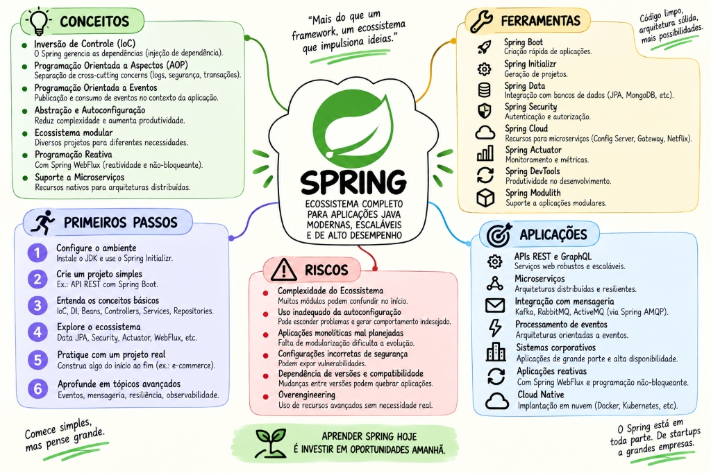

O par do Java completo, na mesma forma. Em cima, a trilha visual: 85 nós em 13 marcos ao longo de um caminho, cada um abrindo num painel com o que é, para que serve, como funciona, exemplo e a armadilha — mais o modo teste, que esconde a resposta e monta a fila do que você errou. Embaixo, o conteúdo: 52 tópicos em 9 partes, com a origem de cada mecanismo, o que ele veio substituir, o código de antes e o de agora, diagramas e as armadilhas que custam dias. Cada grupo da trilha tem a parte correspondente logo abaixo.

MAPA MENTAL PRINCIPALSPRING ECOSSISTEMA COMPLETO — Inversão de Controle, Beans, AOP, Data & Web
Nó da trilhaConsulta rápida: abre num painel, sem sair da página.
Modo testeEsconde a resposta e registra o que você errou.
Tópico do conteúdoA explicação longa, com história e código.
Prova de domínioComo saber que você realmente aprendeu.
↗
A trilha: o caminho clicável
Comece por aqui. Siga o caminho de cima para baixo, clique em qualquer nó para abrir o painel — e use o modo teste para revisar sem reler.
01
O container IoC: onde os objetos nascem
Antes de qualquer anotação ou framework web, o Spring é uma fábrica de objetos que sabe resolver dependências em grafo e gerenciar ciclos de vida.
IoC e ApplicationContext: quem constrói os seus objetos
essencialioc & container
🎯1. O que é?
IoC (Inversion of Control ou Inversão de Controle) é um princípio arquitetural em que o fluxo de controle da aplicação é invertido: em vez de você instanciar suas próprias dependências usando o operador new, um agente externo (o Container IoC do Spring, materializado na interface ApplicationContext) assume a responsabilidade de instanciar, configurar e conectar os objetos.
≈
Analogia do mundo real: Pense em uma montadora de carros. Em vez do motorista forjar os pistões, montar o motor e parafusar o volante antes de dirigir (acoplamento rígido), a fábrica monta o carro completo com todas as peças compatíveis testadas e entrega apenas a chave na sua mão.
🚀 2. Para que serve?
Serve para eliminar o acoplamento rígido entre classes. Quando um OrderService não cria seu PaymentGateway, ele pode receber qualquer implementação (um gateway real para produção ou um mock/stub para testes de unidade) sem alterar uma única linha do seu código interno.
💎 4. Porque importa?
Sistemas corporativos possuem centenas ou milhares de classes interagindo. Sem IoC, qualquer alteração no construtor de uma dependência profunda (ex: adicionar telemetria ao DatabaseClient) causaria um efeito cascata exigindo refatorar dezenas de classes que o instanciam. O IoC centraliza a topologia de montagem em um grafo acíclico dirigido (DAG).
🛠️3. Como usar / Como aplicar?
Declare seus componentes com anotações de estereótipo (@Service, @Repository, @Component) e utilize Injeção por Construtor estrita (reforçada por imutabilidade com campos final):
@Service
public class OrderService {
private final PaymentGateway paymentGateway;
private final InventoryClient inventoryClient;
// Construtor único dispensa @Autowired no Spring moderno
public OrderService(PaymentGateway paymentGateway, InventoryClient inventoryClient) {
this.paymentGateway = paymentGateway;
this.inventoryClient = inventoryClient;
}
}
⚙️5. Como funciona por baixo dos panos?
O ApplicationContext implementa uma fábrica avançada. Durante o bootstrap:
Lê os metadados (anotações ou código @Configuration).
Transforma cada classe em um BeanDefinition no registro interno.
Resolve a ordem topológica das dependências (quem depende de quem).
Instancia os beans via Reflection ou MethodHandles e os armazena no Singleton Cache (um ConcurrentHashMap<String, Object>).
Termos explicados:Reflection é a capacidade da JVM inspecionar classes e invocar construtores em tempo de execução. Bean é qualquer objeto gerenciado pelo ciclo de vida do Spring.
☕6. Exemplos com a linguagem Java
CÓDIGO & PRÁTICA
// Exemplo de registro explícito via @Configuration vs esteriótipo
@Configuration(proxyBeanMethods = false)
public class PaymentConfig {
@Bean
public PaymentGateway paymentGateway(@Value("${payment.provider.url}") String providerUrl) {
return new StripePaymentGateway(providerUrl, Duration.ofSeconds(5));
}
}
⚠️ 7. Onde "quebra" em produção? (Falhas Reais & Armadilhas)
Injeção por Campo (@Autowired private Gateway g;): Dificulta testes unitários (força uso de reflexão suja), mascara excesso de responsabilidades e impede criação de campos final imutáveis.
Ciclos Circulares de Dependência (A depende de B, que depende de A): A partir do Spring Boot 2.6+, dependências circulares lançam BeanCurrentlyInCreationException no startup por padrão, travando o deploy imediatamente.
Pratique agora
Você pode inspecionar todos os beans carregados pelo container injetando o próprio contexto:
@Component
public class ContextInspector implements CommandLineRunner {
private final ApplicationContext ctx;
public ContextInspector(ApplicationContext ctx) { this.ctx = ctx; }
@Override
public void run(String... args) {
System.out.println("Total beans: " + ctx.getBeanDefinitionCount());
Arrays.stream(ctx.getBeanDefinitionNames())
.filter(name -> name.contains("order"))
.forEach(System.out::println);
}
}
Prova de domínioVocê domina a arquitetura interna de IoC e ApplicationContext: quem constrói os seus objetos, explica seu comportamento sob alta concorrência e previne as armadilhas de produção documentadas acima.
BeanDefinition e o registry: a receita antes do prato
essencialioc & container
🎯1. O que é?
BeanDefinition é a estrutura de dados interna do Spring que descreve uma instância de bean antes que ela seja efetivamente criada. Contém metadados como: nome da classe, escopo (singleton/prototype), método fábrica, propriedades a injetar, dependências requeridas (depends-on) e flags de inicialização lazy.
≈
Analogia do mundo real: O BeanDefinition é a planta baixa arquitetural ou a receita do bolo. O Bean é a casa construída ou o bolo assado pronto para consumo.
🚀 2. Para que serve?
Permite que o Spring inspecione, valide, reordene e modifique como os objetos serão instanciados ANTES de gastar memória ou CPU instanciando qualquer objeto real.
💎 4. Porque importa?
É o ponto de extensão máximo do framework. Bibliotecas como Spring Data JPA usam essa camada para criar repositórios dinâmicos sem que você precise escrever uma classe que implemente sua interface.
🛠️3. Como usar / Como aplicar?
Normalmente você não cria BeanDefinition manualmente a menos que esteja escrevendo um starter avançado ou registrando beans dinamicamente em tempo de inicialização através de um BeanFactoryPostProcessor:
public class DynamicClientRegistrar implements BeanDefinitionRegistryPostProcessor {
@Override
public void postProcessBeanDefinitionRegistry(BeanDefinitionRegistry registry) {
BeanDefinition bd = BeanDefinitionBuilder
.genericBeanDefinition(MyCustomApiClient.class)
.addConstructorArgValue("https://api.empresa.com")
.setScope(BeanDefinition.SCOPE_SINGLETON)
.getBeanDefinition();
registry.registerBeanDefinition("customApiClient", bd);
}
}
⚙️5. Como funciona por baixo dos panos?
O leitor de anotações (ClassPathScanningCandidateComponentProvider) usa o ASM (biblioteca de manipulação de bytecode de baixo nível) para ler os metadados dos arquivos .class compilados sem nem precisar carregar as classes na JVM antecipadamente, economizando memória no Metaspace.
⚠️ 7. Onde "quebra" em produção? (Falhas Reais & Armadilhas)
Se você tentar injetar ou obter um bean dentro de um BeanFactoryPostProcessor, você força a instanciação precoce (*early initialization*) daquele bean, ignorando outros processadores e gerando beans que não possuem proxies de segurança, transação ou tracing aplicados!
Pratique agora
O Spring emite alertas no log quando isso ocorre: Bean 'orderService' of type [...] is not eligible for getting processed by all BeanPostProcessors. Isso é sintoma clássico de inicialização prematura.
Prova de domínioVocê domina a arquitetura interna de BeanDefinition e o registry: a receita antes do prato, explica seu comportamento sob alta concorrência e previne as armadilhas de produção documentadas acima.
Resolução de dependências: qual bean vence
essencialioc & container
🎯1. O que é?
É o algoritmo de desempate utilizado pelo container quando há múltiplos beans do mesmo tipo candidatos à injeção de uma dependência.
≈
Analogia do mundo real: Se você pedir "um motorista" e houver três no saguão, a recepção precisa de uma regra clara: ou chama o motorista prioritário (@Primary), ou você aponta o crachá do motorista específico (@Qualifier), ou a viagem não acontece.
🚀 2. Para que serve?
Permite coexistência de múltiplas implementações de uma mesma interface no sistema (ex: envio de e-mail via SES em prod e via FakeEmail em testes locais) com desempate explícito e previsível.
💎 4. Porque importa?
Evita erros fatais de NoUniqueBeanDefinitionException em tempo de startup e permite criar arquiteturas com Fallback ou estratégias dinâmicas injetando uma lista de beans (List<Notificador>).
🛠️3. Como usar / Como aplicar?
public interface Notificador { void enviar(String msg); }
@Component
@Primary // Bean padrão quando ninguém especificar
public class EmailNotificador implements Notificador { ... }
@Component("smsNotificador")
public class SmsNotificador implements Notificador { ... }
// No consumidor que necessita do SMS especificamente:
@Service
public class AlertaUrgenteService {
private final Notificador notificador;
public AlertaUrgenteService(@Qualifier("smsNotificador") Notificador notificador) {
this.notificador = notificador;
}
}
⚙️5. Como funciona por baixo dos panos?
A classe DefaultListableBeanFactory avalia candidatos na seguinte ordem de precedência:
Verifica se há correspondência exata de @Qualifier.
Verifica se existe exatamente um bean marcado com @Primary.
Verifica prioridade com @Priority (JSR-250 / Jakarta).
Tenta casar o nome do parâmetro do método/construtor com o nome registrado do bean (fallback por nome).
Se persistir mais de um candidato: lança exceção.
☕6. Exemplos com a linguagem Java
CÓDIGO & PRÁTICA
// Padrão Strategy elegante com Injeção de Coleção
@Service
public class RoteadorNotificacao {
private final Map<String, Notificador> notificadores;
// O Spring injeta automaticamente todos os beans do tipo com a chave sendo o nome do bean!
public RoteadorNotificacao(Map<String, Notificador> notificadores) {
this.notificadores = notificadores;
}
public void enviar(String canal, String msg) {
Notificador n = notificadores.get(canal + "Notificador");
if (n == null) throw new IllegalArgumentException("Canal não suportado: " + canal);
n.enviar(msg);
}
}
⚠️ 7. Onde "quebra" em produção? (Falhas Reais & Armadilhas)
Múltiplos @Primary: Declarar @Primary em duas implementações causa NoUniqueBeanDefinitionException com mensagem confusa informando que mais de um bean primário foi encontrado.
Casamento por nome frágil: Confiar no nome do parâmetro Java pode falhar se a compilação ocorrer sem a flag -parameters do javac, fazendo o parâmetro virar arg0 no bytecode.
Pratique agora
Para garantir que nomes de parâmetros sejam preservados em tempo de compilação no Maven:
Prova de domínioVocê domina a arquitetura interna de Resolução de dependências: qual bean vence, explica seu comportamento sob alta concorrência e previne as armadilhas de produção documentadas acima.
Escopos e ObjectProvider: quanto tempo o objeto vive
essencialioc & container
🎯1. O que é?
O Escopo de um Bean define o ciclo de visibilidade e a quantidade de instâncias que o container cria. O padrão é singleton (uma única instância por ApplicationContext). Outros escopos incluem prototype (uma nova instância a cada solicitação), request (uma por requisição HTTP) e session (uma por sessão de usuário).
≈
Analogia do mundo real: Singleton é a cafeteira comunitária do escritório (todo mundo usa a mesma). Prototype é a xícara descartável (cada um pega uma nova do pacote).
🚀 2. Para que serve?
Controla concorrência e uso de memória. Componentes sem estado (*stateless*, ex: Services, Repositories) devem ser singletons. Objetos que guardam estado volátil ou mutável precisam de escopos mais restritos.
💎 4. Porque importa?
Se você injeta diretamente um bean prototype dentro de um singleton via construtor, o prototype é instanciado apenas uma vez (quando o singleton é criado), matando o comportamento prototype silenciosamente! Esse é o famoso Scoped Bean Injection Problem.
🛠️3. Como usar / Como aplicar?
Para injetar um bean de ciclo de vida curto ou opcional em um Singleton sem travar o escopo, utilize ObjectProvider<T>:
@Service
public class RelatorioService {
private final ObjectProvider<GeradorPdfWorker> workerProvider;
public RelatorioService(ObjectProvider<GeradorPdfWorker> workerProvider) {
this.workerProvider = workerProvider;
}
public void gerarRelatorio() {
// Obtém uma nova instância limpa toda vez que o método roda:
GeradorPdfWorker worker = workerProvider.getObject();
worker.processar();
}
}
⚙️5. Como funciona por baixo dos panos?
Para o escopo singleton, o Spring armazena a instância num mapa sincronizado. Quando é prototype, o container executa o pipeline de instanciação, injeção de dependência e inicialização (@PostConstruct), mas NÃO guarda a referência e não executa o @PreDestroy: o descarte fica a cargo do Garbage Collector da JVM.
☕6. Exemplos com a linguagem Java
CÓDIGO & PRÁTICA
// Resolução segura de dependência opcional com ObjectProvider
@Service
public class AuditService {
private final MetricsPublisher publisher;
public AuditService(ObjectProvider<MetricsPublisher> provider) {
// Se o bean existir no contexto, usa ele; se não, usa NoOp fallback
this.publisher = provider.getIfAvailable(NoOpMetricsPublisher::new);
}
}
⚠️ 7. Onde "quebra" em produção? (Falhas Reais & Armadilhas)
Estado mutável em Bean Singleton: Colocar variáveis de instância mutáveis (ex: private User currentUser;) em um @Service ou @RestController causa vazamento de dados entre requisições concorrentes de usuários diferentes!
Leak de Memória em Prototype: Se o bean prototype alocar conexões ou arquivos externos, como o Spring não chama @PreDestroy nele, você causará vazamento de recursos do sistema operacional.
Pratique agora
Se precisar injetar um bean de escopo web (request) em um singleton, configure modo de proxy scoped:
@Component
@Scope(value = WebApplicationContext.SCOPE_REQUEST, proxyMode = ScopedProxyMode.TARGET_CLASS)
public class RequestUserContext {
private String tenantId;
// ...
}
Prova de domínioVocê domina a arquitetura interna de Escopos e ObjectProvider: quanto tempo o objeto vive, explica seu comportamento sob alta concorrência e previne as armadilhas de produção documentadas acima.
Lifecycle e BeanPostProcessor: quando o objeto vira outro
essencialioc & container
🎯1. O que é?
O Lifecycle de um Bean é a seqüência estrita de etapas pela qual um objeto passa desde o carregamento até o descarte. A interface BeanPostProcessor é o mecanismo que intercepta essas etapas, permitindo modificar a instância ou substituí-la por um Proxy decorado.
≈
Analogia do mundo real: Pense em uma esteira industrial de montagem de carros. O carro é montado (construtor), recebe os acessórios (injeção de campos), passa pela inspeção de qualidade (@PostConstruct) e, antes de sair da fábrica, recebe uma blindagem especial (o Proxy gerado pelo BeanPostProcessor).
🚀 2. Para que serve?
É como todo o poder moderno do Spring funciona: anotações como @Transactional, @Async, @Retryable e @PreAuthorize funcionam porque um BeanPostProcessor interceptou o bean e o envelopou em um proxy dinâmico.
💎 4. Porque importa?
Compreender essa esteira evita o erro mais comum de desenvolvedores júnior: tentar usar dependências injetadas de dentro do construtor Java comum (onde elas ainda estão com valor null).
🛠️3. Como usar / Como aplicar?
@Component
public class LogExecutionTimePostProcessor implements BeanPostProcessor {
@Override
public Object postProcessAfterInitialization(Object bean, String beanName) {
if (bean.getClass().isAnnotationPresent(Audited.class)) {
// Pode retornar um proxy que envolve o bean original
return Proxy.newProxyInstance(
bean.getClass().getClassLoader(),
bean.getClass().getInterfaces(),
new AuditInvocationHandler(bean)
);
}
return bean; // retorna o original inalterado
}
}
⚙️5. Como funciona por baixo dos panos?
A esteira canônica de criação de um bean é:
Instanciação via Construtor / Factory Method.
Injeção de propriedades e dependências.
Chamada dos métodos Aware (ex: setApplicationContext).
postProcessBeforeInitialization de todos os BeanPostProcessor.
Método anotado com @PostConstruct / InitializingBean.afterPropertiesSet().
postProcessAfterInitialization (aqui nascem os Proxies CGLIB e AOP).
Bean pronto para uso e inserido no cache singleton.
☕6. Exemplos com a linguagem Java
CÓDIGO & PRÁTICA
@Component
public class CacheWarmupService {
private final CacheClient cacheClient;
private final ProdutoRepository repository;
public CacheWarmupService(CacheClient cacheClient, ProdutoRepository repository) {
this.cacheClient = cacheClient;
this.repository = repository;
// ERRADO: chamar repository aqui causa problemas se o banco ainda não estiver pronto!
}
@PostConstruct
public void warmup() {
// CORRETO: Executado após todas as injeções estarem consolidadas
var tops = repository.findTop100MaisVendidos();
cacheClient.putAll("produtos:destaque", tops);
}
}
⚠️ 7. Onde "quebra" em produção? (Falhas Reais & Armadilhas)
Chamar métodos do próprio bean com anotações de proxy de dentro de @PostConstruct: Durante o @PostConstruct, o proxy AOP AINDA NÃO FOI APLICADO (ele é aplicado no passo posterior). Chamar um método @Transactional dentro de @PostConstruct não abrirá transação no banco!
Lógicas lentas bloqueantes no @PostConstruct: Inicializações pesadas (ex: baixar 500MB de dados da nuvem) dentro de @PostConstruct bloqueiam o startup inteiro da aplicação, fazendo orquestradores como o Kubernetes matarem o Pod por timeout de Readiness Probe.
Pratique agora
Para executar lógicas pesadas somente após o contexto estar 100% pronto e aceitando tráfego, escute o evento ApplicationReadyEvent:
@EventListener(ApplicationReadyEvent.class)
public void onAppReady() {
// Executa em thread segura após todos os proxies e servidores estarem no ar
}
Prova de domínioVocê domina a arquitetura interna de Lifecycle e BeanPostProcessor: quando o objeto vira outro, explica seu comportamento sob alta concorrência e previne as armadilhas de produção documentadas acima.
@Configuration, @Bean e eventos de aplicação
essencialioc & container
🎯1. O que é?
Classes marcadas com @Configuration servem como fontes de definições de beans criados programaticamente via métodos @Bean. Além disso, o Spring provê um barramento desacoplado de eventos locais em memória através de ApplicationEventPublisher e @EventListener.
≈
Analogia do mundo real:@Configuration é o cartório de registro onde as receitas oficiais de objetos de terceiros são carimbadas. Os eventos locais são o interfone do condomínio: alguém grita "o portão abriu" e quem tiver interesse escuta e reage.
🚀 2. Para que serve?
Serve para registrar classes que você não pode alterar o código-fonte (como bibliotecas externas: AWS SDK, ObjectMapper do Jackson, drivers JDBC) e para desacoplar tarefas secundárias (ex: enviar e-mail de boas-vindas após criar cliente) sem misturar regras de negócio.
💎 4. Porque importa?
O @TransactionalEventListener permite adiar a execução do ouvinte até que a transação do banco seja confirmada com sucesso (TransactionPhase.AFTER_COMMIT), impedindo o envio de e-mails ou mensagens para pedidos que sofreram rollback!
🛠️3. Como usar / Como aplicar?
// Evento como Record imutável
public record PedidoCriadoEvent(Long pedidoId, BigDecimal total, Instant instante) {}
@Service
public class CheckoutService {
private final ApplicationEventPublisher eventPublisher;
public CheckoutService(ApplicationEventPublisher eventPublisher) {
this.eventPublisher = eventPublisher;
}
public void finalizarPedido(Long id, BigDecimal total) {
// Salva pedido no banco...
eventPublisher.publishEvent(new PedidoCriadoEvent(id, total, Instant.now()));
}
}
// Ouvinte desacoplado:
@Component
public class NotificacaoListener {
@EventListener
public void onPedidoCriado(PedidoCriadoEvent event) {
System.out.println("Notificando cliente sobre pedido: " + event.pedidoId());
}
}
⚙️5. Como funciona por baixo dos panos?
Por padrão, classes @Configuration sofrem melhoramento de bytecode por CGLIB para garantir que chamadas inter-métodos @Bean retornem sempre a mesma instância singleton (evitando invocar o construtor duas vezes). Para desativar esse overhead quando não houver inter-chamadas, use @Configuration(proxyBeanMethods = false) (*modo Lite*).
☕6. Exemplos com a linguagem Java
CÓDIGO & PRÁTICA
@Component
public class AuditoriaEventListener {
// Só roda SE a transação de banco der commit com sucesso:
@TransactionalEventListener(phase = TransactionPhase.AFTER_COMMIT)
public void onPedidoCriado(PedidoCriadoEvent event) {
// Seguro disparar mensagem para RabbitMQ/Kafka ou e-mail aqui!
}
}
⚠️ 7. Onde "quebra" em produção? (Falhas Reais & Armadilhas)
Abrir nova transação em AFTER_COMMIT: Se o ouvinte anotado com @TransactionalEventListener(phase = AFTER_COMMIT) tentar salvar algo no banco com @Transactional padrão (REQUIRED), a conexão já foi commitada e os novos dados NÃO serão persistidos a menos que você declare @Transactional(propagation = Propagation.REQUIRES_NEW).
Eventos síncronos travando requisição: Por padrão, @EventListener roda de forma síncrona na mesma thread da requisição HTTP. Se o ouvinte demorar 5 segundos para chamar uma API externa, o usuário final esperará 5 segundos. Use @Async para torná-lo assíncrono.
Pratique agora
Demonstração da interceptação CGLIB em @Configuration:
@Configuration
public class SecurityConfig {
@Bean public PasswordEncoder passwordEncoder() { return new BCryptPasswordEncoder(); }
@Bean public UserService userService() {
// Mesmo chamando passwordEncoder() como método, o CGLIB intercepta e devolve o singleton!
return new UserServiceImpl(passwordEncoder());
}
}
Prova de domínioVocê domina a arquitetura interna de @Configuration, @Bean e eventos de aplicação, explica seu comportamento sob alta concorrência e previne as armadilhas de produção documentadas acima.
02
Spring Boot: convenção com direito de recusa
O Boot não é um framework novo: é um conjunto de auto-configurações condicionais que aceleram o bootstrap sem tirar o controle da sua mão.
SpringApplication: o bootstrap em ordem fixa
essencialboot & starters
🎯1. O que é?
SpringApplication é a classe orquestradora do bootstrap do Spring Boot. É ela quem é executada dentro do seu método public static void main através da chamada SpringApplication.run(MinhaApp.class, args).
≈
Analogia do mundo real: Pense na decolagem de um avião comercial. O piloto não liga os motores aleatoriamente: existe um checklist estrito de checagem de sistemas, pressurização, combustível e autorização da torre antes de liberar as turbinas.
🚀 2. Para que serve?
Serve para inicializar todos os subsistemas na ordem cronológica correta: carregar variáveis de ambiente, inferir o tipo de aplicação (Web Servlet vs Reativo WebFlux vs CLI), criar o ApplicationContext e subir o servidor HTTP embutido (Tomcat/Netty).
💎 4. Porque importa?
Entender a ordem exata do bootstrap é a diferença entre debugar um erro de startup em 2 minutos ou passar horas sem entender por que uma propriedade do application.yaml ainda não está disponível quando uma classe estática é inicializada.
🛠️3. Como usar / Como aplicar?
@SpringBootApplication
public class MinhaApp {
public static void main(String[] args) {
SpringApplication app = new SpringApplication(MinhaApp.class);
// Customizações programáticas antes da decolagem:
app.setBannerMode(Banner.Mode.OFF); // desativa banner para logs mais limpos
app.setLazyInitialization(false); // fail-fast em produção
app.run(args);
}
}
⚙️5. Como funciona por baixo dos panos?
A seqüência rigorosa de 9 passos do SpringApplication.run:
Inicia o StopWatch para telemetria de tempo de boot.
Configura ouvintes de bootstrap e dispara ApplicationStartingEvent.
Monta o ConfigurableEnvironment (lê argumentos CLI, System properties e arquivos yaml).
Imprime o Banner (se ativo).
Cria a instância apropriada de ApplicationContext (ex: AnnotationConfigServletWebServerApplicationContext).
Aplica ApplicationContextInitializer registrados.
Executa o refreshContext: varre classes, cria Singletons e sobe o Tomcat na porta 8080.
Dispara ApplicationReadyEvent.
Executa todos os CommandLineRunner e ApplicationRunner registrados.
☕6. Exemplos com a linguagem Java
CÓDIGO & PRÁTICA
// Executando lógica assim que o contexto sobe com acesso aos argumentos da CLI
@Component
@Order(1) // define prioridade entre múltiplos runners
public class DataSeederRunner implements ApplicationRunner {
private final ProdutoRepository repository;
public DataSeederRunner(ProdutoRepository repository) {
this.repository = repository;
}
@Override
public void run(ApplicationArguments args) {
if (args.containsOption("seed-data")) {
repository.save(new Produto("Notebook Pro", BigDecimal.valueOf(8500)));
}
}
}
⚠️ 7. Onde "quebra" em produção? (Falhas Reais & Armadilhas)
Lazy Initialization em Produção (spring.main.lazy-initialization=true): Embora reduza o tempo de boot localmente, adia a instanciação de beans para a primeira requisição do usuário. Se houver um erro de configuração de banco ou bean faltando, a aplicação sobe "com sucesso" e quebra na cara do primeiro cliente em produção (*fail-late* em vez de *fail-fast*).
Lançar exceções não tratadas dentro de um ApplicationRunner: Qualquer exceção lançada dentro de um CommandLineRunner aborta o processo da JVM imediatamente com exit code não zero.
Pratique agora
Para diagnosticar falhas no startup com sugestões de correção automáticas, o Spring Boot utiliza FailureAnalyzer:
***************************
APPLICATION FAILED TO START
***************************
Description:
Field repository in OrderService required a bean of type 'ProdutoRepository' that could not be found.
Action:
Consider defining a bean of type 'ProdutoRepository' in your configuration.
Prova de domínioVocê domina a arquitetura interna de SpringApplication: o bootstrap em ordem fixa, explica seu comportamento sob alta concorrência e previne as armadilhas de produção documentadas acima.
Component scan: por que aquele bean existe
essencialboot & starters
🎯1. O que é?
Component Scan é o mecanismo de descoberta automática pelo qual o Spring inspeciona o classpath a partir de pacotes base, procurando classes decoradas com anotações de estereótipo (@Component, @Service, @Repository, @Controller, @RestController, @Configuration) para registrá-las como beans.
≈
Analogia do mundo real: É o radar de um navio. A classe principal com @SpringBootApplication é o navio, e o radar varre todas as ilhas e navios que estiverem na mesma coordenada ou em águas abaixo dela (sub-pacotes).
🚀 2. Para que serve?
Elimina a necessidade de registrar manualmente cada classe em arquivos XML ou em classes @Configuration gigantes, permitindo que a adição de uma anotação transforme a classe em um componente ativo do sistema.
💎 4. Porque importa?
Mais de 50% dos erros de iniciantes no Spring ("NoSuchBeanDefinitionException: No qualifying bean of type...") decorrem simplesmente de colocar classes em pacotes irmãos ou fora da árvore do pacote raiz da classe principal.
🛠️3. Como usar / Como aplicar?
Mantenha a classe principal anotada com @SpringBootApplication no pacote raiz da sua aplicação (ex: com.minhaempresa.ecommerce):
A anotação @SpringBootApplication é uma meta-anotação que agrega:
@SpringBootConfiguration: especialização de @Configuration.
@EnableAutoConfiguration: ativação das auto-configurações condicionais do Spring Boot.
@ComponentScan: configurado com o pacote da classe onde ela está declarada como basePackage padrão.
O scanner usa filtros TypeFilter e leitura de bytecode com a biblioteca ASM para detectar as anotações sem invocar o classloader em todas as classes.
☕6. Exemplos com a linguagem Java
CÓDIGO & PRÁTICA
// Escaneando múltiplos pacotes compartilhados (ex: monorepo ou bibliotecas comuns)
@SpringBootApplication(scanBasePackages = {
"com.minhaempresa.ecommerce",
"com.minhaempresa.core.security"
})
public class Application {
public static void main(String[] args) {
SpringApplication.run(Application.class, args);
}
}
⚠️ 7. Onde "quebra" em produção? (Falhas Reais & Armadilhas)
Classes no pacote raiz padrão (default package sem nome): Colocar a classe Application.java solta em src/main/java sem pacote faz o Spring tentar escanear todos os JARs de todo o classpath, degradando o tempo de boot e frequentemente causando estouro de Metaspace.
Colisão de Nomes Simples de Beans: Duas classes com o mesmo nome em pacotes diferentes (ex: com.app.v1.OrderService e com.app.v2.OrderService) geram colisão de bean name orderService, lançando ConflictingBeanDefinitionException.
Pratique agora
Se precisar desambiguar nomes de classes duplicadas no scan, você pode customizar o gerador de nomes:
Prova de domínioVocê domina a arquitetura interna de Component scan: por que aquele bean existe, explica seu comportamento sob alta concorrência e previne as armadilhas de produção documentadas acima.
Auto-configuração e condições: a mágica desmontada
essencialboot & starters
🎯1. O que é?
Auto-configuração é a capacidade do Spring Boot de pré-configurar automaticamente tecnologias inteiras (como conexões de banco de dados, brokers de mensageria, serializadores JSON) com base nas classes presentes no classpath e nas propriedades definidas no ambiente, através de Anotações Condicionais (@ConditionalOn...).
≈
Analogia do mundo real: É o sensor crepuscular de um carro moderno. Se os sensores detectarem que está escuro (condição atendida), os faróis acendem sozinhos. Se você ligar o farol alto manualmente (sobrescrita explícita), o automatismo sai da frente.
🚀 2. Para que serve?
Elimina o "boilerplate" de configuração. Se você adiciona spring-boot-starter-data-jpa e o driver do PostgreSQL no seu pom.xml, o Spring Boot automaticamente cria o DataSource, o pool HikariCP, o EntityManagerFactory e o gerenciador de transações sem você precisar escrever 50 linhas de código Java.
💎 4. Porque importa?
Compreender que o Spring Boot é baseado em @ConditionalOnMissingBean é a regra de ouro: a convenção sempre recua diante da sua decisão explícita. Se você definir o seu próprio bean, a auto-configuração se desativa silenciosamente sem conflitos.
🛠️3. Como usar / Como aplicar?
As anotações condicionais fundamentais que governam essa inteligência:
@ConditionalOnClass(DataSource.class): só roda se a classe estiver no classpath.
@ConditionalOnMissingBean(DataSource.class): só roda se VOCÊ NÃO tiver declarado seu próprio @Bean DataSource.
@ConditionalOnProperty(name = "feature.pix.enabled", havingValue = "true"): avalia flags no application.yaml.
⚙️5. Como funciona por baixo dos panos?
No Spring Boot 3+, o arquivo chave é META-INF/spring/org.springframework.boot.autoconfigure.AutoConfiguration.imports dentro dos JARs dos starters. O Spring lê este arquivo texto, encontra todas as classes de configuração candidatas e avalia as anotações @Conditional via grafos de dependência.
☕6. Exemplos com a linguagem Java
CÓDIGO & PRÁTICA
@AutoConfiguration
@ConditionalOnClass(RedisTemplate.class)
@ConditionalOnProperty(name = "app.cache.type", havingValue = "redis", matchIfMissing = true)
public class CustomRedisAutoConfiguration {
@Bean
@ConditionalOnMissingBean(name = "redisTemplate")
public RedisTemplate<String, Object> redisTemplate(RedisConnectionFactory factory) {
RedisTemplate<String, Object> template = new RedisTemplate<>();
template.setConnectionFactory(factory);
template.setKeySerializer(new StringRedisSerializer());
return template;
}
}
⚠️ 7. Onde "quebra" em produção? (Falhas Reais & Armadilhas)
Auto-configuração indesejada ativada por dependência transitiva: Adicionar uma biblioteca externa que traga dependências de mensageria ou banco de dados embutido (H2) pode fazer o Spring Boot tentar inicializar recursos indesejados. Solução: @SpringBootApplication(exclude = DataSourceAutoConfiguration.class).
Erro de digitação em @ConditionalOnProperty: Errar o nome da propriedade no yaml faz o bean nunca ser registrado, e a aplicação falha silenciosamente sem avisar que a funcionalidade está desativada.
Pratique agora
Para ver exatamente quais condições passaram e quais foram rejeitadas durante o boot, execute sua aplicação com a flag:
java -jar app.jar --debug
O Spring Boot gerará o relatório completo CONDITIONS EVALUATION REPORT detalhando exatamente por que cada bean foi ou não instanciado.
Prova de domínioVocê domina a arquitetura interna de Auto-configuração e condições: a mágica desmontada, explica seu comportamento sob alta concorrência e previne as armadilhas de produção documentadas acima.
Environment e a ordem de precedência
essencialboot & starters
🎯1. O que é?
O Environment do Spring unifica duas abstrações cruciais: Profiles (perfis de execução como dev, staging, prod) e Properties (valores de configuração injetáveis). O Spring Boot adota uma ordem estrita de sobreposição (*precedência*) com mais de 15 fontes de propriedades.
≈
Analogia do mundo real: Pense em camadas de vestuário no frio. A camisa básica é o application.yaml padrão. O suéter por cima é o perfil de ambiente (application-prod.yaml). O casaco pesado por cima de tudo são as variáveis de ambiente do SO ou os argumentos da linha de comando, que cobrem tudo o que estiver embaixo.
🚀 2. Para que serve?
Permite seguir à risca o terceiro fator do *12-Factor App* (Armazenar a configuração no ambiente). O mesmo artefato compilado (JAR ou imagem Docker) pode rodar no computador do desenvolvedor, em homologação e em produção apenas mudando as variáveis de ambiente, sem recompilar código.
💎 4. Porque importa?
Permite que segredos de infraestrutura (senhas de banco, chaves de API, credenciais AWS) nunca sejam commitados em arquivos locais do Git, sendo injetados com precedência máxima pelas variáveis de ambiente do Kubernetes ou AWS ECS.
🛠️3. Como usar / Como aplicar?
Utilize a ordem de precedência padrão das fontes mais importantes (da maior prioridade para a menor):
Argumentos de Linha de Comando (CLI): --server.port=9090
Propriedades de Sistema da JVM: -Dserver.port=9090
Variáveis de Ambiente do Sistema Operacional: SERVER_PORT=9090 (Relaxed Binding converte automaticamente)
application-{profile}.yaml fora do JAR empacotado (diretório /config)
application-{profile}.yaml empacotado dentro do JAR
application.yaml padrão dentro do JAR
⚙️5. Como funciona por baixo dos panos?
O Spring Boot implementa Relaxed Binding. Uma propriedade como database.connection-timeout pode ser declarada no Linux como DATABASE_CONNECTIONTIMEOUT, DATABASE_CONNECTION_TIMEOUT ou no yaml como database.connectionTimeout: o binder normaliza as strings usando kebab-case internamente.
☕6. Exemplos com a linguagem Java
CÓDIGO & PRÁTICA
# application.yaml (padrões seguros de desenvolvimento)
server:
port: 8080
spring:
datasource:
url: jdbc:postgresql://localhost:5432/db_dev
hikari:
maximum-pool-size: 5
# Em produção (Kubernetes ConfigMap / Secret):
# SPRING_DATASOURCE_URL=jdbc:postgresql://db.prod.internal:5432/db_prod
# SPRING_DATASOURCE_HIKARI_MAXIMUM_POOL_SIZE=30
⚠️ 7. Onde "quebra" em produção? (Falhas Reais & Armadilhas)
Propriedade de perfil ativo sobreposta acidentalmente: Definir spring.profiles.active=dev dentro do application.yaml empacotado no JAR impede que orquestradores externos chaveiem o profile sem usar variáveis de linha de comando forçadas.
Conflito entre .properties e .yaml: Se ambos existirem na mesma pasta, arquivos .properties possuem precedência superior a arquivos .yaml, causando confusão quando alguém edita o yaml e nada muda.
Pratique agora
O Spring Boot 3+ suporta importações dinâmicas e profiles modernos usando a diretiva spring.config.import:
Prova de domínioVocê domina a arquitetura interna de Environment e a ordem de precedência, explica seu comportamento sob alta concorrência e previne as armadilhas de produção documentadas acima.
@ConfigurationProperties: configuração como contrato
essencialboot & starters
🎯1. O que é?
@ConfigurationProperties é a anotação que mapeia grupos inteiros de propriedades hierárquicas de configuração (do yaml/properties) para objetos Java fortemente tipados e validados, preferencialmente utilizando Java Records imutáveis.
≈
Analogia do mundo real:@Value("${meu.param}") é como aceitar envelopes soltos com anotações à mão espalhados pela mesa. @ConfigurationProperties é como ter um contrato formal encadernado, carimbado e validado por um cartório antes de ser assinado.
🚀 2. Para que serve?
Substitui o uso frágil e espalhado de múltiplos @Value. Centraliza a leitura, validação de tipos, durações (Duration), tamanhos de dados (DataSize) e validação de restrições (Bean Validation JSR-380) no momento em que a aplicação inicializa.
💎 4. Porque importa?
Garante Fail-Fast no Startup. Se alguém esquecer de configurar uma URL ou passar uma string onde se esperava um número, a aplicação falha imediatamente no boot com uma mensagem de erro cristalina, impedindo que a aplicação suba corrompida e falhe no meio de uma transação crítica horas depois.
🛠️3. Como usar / Como aplicar?
Utilize Constructor Binding com Java Records e anotações de Bean Validation:
@Validated
@ConfigurationProperties(prefix = "pagamento.gateway")
public record GatewayProperties(
@NotBlank String url,
@Positive @DefaultValue("3") int maxRetries,
@NotNull @DefaultValue("5s") Duration timeout,
Seguranca seguranca
) {
public record Seguranca(@NotBlank String apiKey, boolean sandBox) {}
}
⚙️5. Como funciona por baixo dos panos?
O processador de metadados do Spring gera o arquivo META-INF/spring-configuration-metadata.json durante a compilação. Isso habilita o auto-complete e validação de sintaxe diretamente dentro da sua IDE (IntelliJ/VS Code) quando você edita o application.yaml.
☕6. Exemplos com a linguagem Java
CÓDIGO & PRÁTICA
@Service
public class StripeService {
private final GatewayProperties props;
// Injeção limpa e tipada
public StripeService(GatewayProperties props) {
this.props = props;
}
public void processar() {
System.out.println("Chamando: " + props.url() + " com timeout: " + props.timeout().toMillis() + "ms");
}
}
⚠️ 7. Onde "quebra" em produção? (Falhas Reais & Armadilhas)
Falta da dependência de validação: Se colocar @Validated e @NotNull mas não incluir o starter spring-boot-starter-validation (Hibernate Validator), as anotações são simplesmente ignoradas e nenhuma validação ocorre no startup!
Classes mutáveis com Getters/Setters: Usar classes mutáveis normais para propriedades abre brechas para que métodos de negócio alterem os valores de configuração em tempo de execução, gerando bugs de concorrência imprevisíveis. Prefira Records imutáveis.
Pratique agora
Para habilitar a geração automática de metadados de IDE para suas propriedades customizadas, inclua no Maven:
Prova de domínioVocê domina a arquitetura interna de @ConfigurationProperties: configuração como contrato, explica seu comportamento sob alta concorrência e previne as armadilhas de produção documentadas acima.
Starter e auto-config própria: a estrada pavimentada
essencialboot & starters
🎯1. O que é?
Um Spring Boot Starter corporativo é um artefato reutilizável que empacota um conjunto coerente de dependências, auto-configurações condicionais e boas práticas da empresa, transformando uma integração complexa em uma simples linha no arquivo de build (Golden Path ou Estrada Pavimentada).
≈
Analogia do mundo real: É um kit de ferramentas pronto para eletricistas. Em vez de cada profissional comprar parafusos, alicates e fita isolante separadamente arriscando esquecer algo crítico, a empresa entrega uma maleta padronizada e testada.
🚀 2. Para que serve?
Serve para governança e produtividade em arquiteturas de microsserviços. Garante que todos os times usem os mesmos padrões corporativos de autenticação, telemetria (OpenTelemetry), auditoria e resiliência sem duplicar código boilerplate em dezenas de repositórios.
💎 4. Porque importa?
Sem starters próprios, atualizações críticas (ex: atualizar versão de SDK com falha de segurança zero-day) exigem reuniões, manuais de migração e meses de refatoração manual time a time. Com starters, basta subir a versão do starter corporativo no BOM da empresa.
🛠️3. Como usar / Como aplicar?
A arquitetura canônica de um starter é dividida em dois módulos:
meu-starter-autoconfigure: Contém as classes Java de configuração, os @Bean condicionais e os metadados.
meu-starter: Módulo "guarda-chuva" (pom vazio) que apenas importa o módulo autoconfigure e as dependências externas de runtime.
⚙️5. Como funciona por baixo dos panos?
O starter registra suas classes no arquivo META-INF/spring/org.springframework.boot.autoconfigure.AutoConfiguration.imports. As classes devem usar @AutoConfiguration com ordenação explícita (@AutoConfigureAfter(DataSourceAutoConfiguration.class) ou @AutoConfigureBefore) para garantir que executem no instante exato da cadeia.
☕6. Exemplos com a linguagem Java
CÓDIGO & PRÁTICA
@AutoConfiguration
@ConditionalOnClass(Tracer.class)
@EnableConfigurationProperties(AuditProperties.class)
public class AuditAutoConfiguration {
@Bean
@ConditionalOnMissingBean
public AuditInterceptor auditInterceptor(Tracer tracer, AuditProperties props) {
return new AuditInterceptor(tracer, props.appName());
}
}
Simulador Interativo · CGLIB Proxy & O Bug da Auto-Invocação
Veja a mecânica de interceptação do Spring e por que chamar this.metodo() quebra o @Transactional
Passo 1Chamador (Client)
Passo 2CGLIB Proxy
Passo 3TransactionInterceptor
Passo 4Objeto Real (Target)
Passo 5Resultado & Commit
[Spring IoC Ativo] Escolha um cenário para rastrear a execução do Dynamic Proxy em runtime...
⚠️ 7. Onde "quebra" em produção? (Falhas Reais & Armadilhas)
Esquecer o @ConditionalOnMissingBean: Se o seu starter não declarar essa anotação nos métodos @Bean, ele impedirá os times desenvolvedores de sobrescreverem beans específicos para casos excepcionais, tornando a biblioteca rígida e odiada pelos times.
Poluição de dependências transitivas: Incluir dependências desnecessárias com escopo compile no starter em vez de provided ou optional força dependências pesadas e versões conflitantes na aplicação consumidora.
Pratique agora
Como verificar a origem do bean gerado pelo starter:
Prova de domínioVocê domina a arquitetura interna de Starter e auto-config própria: a estrada pavimentada, explica seu comportamento sob alta concorrência e previne as armadilhas de produção documentadas acima.
03
Proxies, AOP e transações
A parte que explica os bugs mais misteriosos do ecossistema: por que anotações parecem ser ignoradas quando chamadas dentro da mesma classe.
Proxy JDK e CGLIB: o objeto que não é o seu
essencialdata & persistência
🎯1. O que é?
Um Proxy Dinâmico no Spring é um objeto "dublê" ou intermediário criado em tempo de execução pela JVM que possui exatamente os mesmos métodos da sua classe de negócio, mas intercepta cada chamada para executar tarefas transversais (abrir transação, autenticar, registrar métricas) antes e depois de repassar a execução para a sua instância real.
≈
Analogia do mundo real: Pense em um segurança de banco. Você (o cliente) nunca aperta a mão do cofre diretamente. Você fala com o segurança no balcão (o Proxy); ele valida seu documento, abre o registro de auditoria, entra no cofre para buscar o pacote e fecha a porta de aço com trava ao sair.
🚀 2. Para que serve?
Serve para desacoplar a lógica de negócio pura das preocupações transversais (*cross-cutting concerns*). O seu método de serviço cuida apenas de calcular taxas e atualizar saldos; o proxy cuida de abrir e fechar a conexão de banco, fazer commit ou dar rollback.
💎 4. Porque importa?
Compreender que você está lidando com um Proxy é a chave para não ser vítima dos bugs mais silenciosos do Java: classes ou métodos marcados com a palavra-chave final não podem ser sobrescritos pelo CGLIB, fazendo com que anotações como @Transactional simplesmente deixem de funcionar sem dar erro!
🛠️3. Como usar / Como aplicar?
O Spring Boot moderno utiliza CGLIB por padrão (através de subclasses dinâmicas):
// Sua classe normal:
@Service
public class ContaService {
@Transactional
public void transferir(Long de, Long para, BigDecimal valor) {
// Lógica de negócio
}
}
// O que o Spring realmente injeta no Controller:
// Uma subclasse gerada dinamicamente: ContaService$$SpringCGLIB$$0
⚙️5. Como funciona por baixo dos panos?
Existem dois tipos fundamentais de proxies no ecossistema:
JDK Dynamic Proxies (java.lang.reflect.Proxy): Exigem que a classe implemente uma interface. O dublê implementa a interface e delega as chamadas via InvocationHandler.
CGLIB (Bytecode Generation via ASM): Cria uma subclasse em tempo de execução que estende a sua classe concreta e sobrescreve os métodos via interceptores MethodInterceptor. Por isso, a classe e seus métodos não podem ser final e precisam de um construtor visível (não-privado).
☕6. Exemplos com a linguagem Java
CÓDIGO & PRÁTICA
// Verificando se o objeto injetado é um proxy real
@Component
public class ProxyVerifier implements CommandLineRunner {
private final ContaService service;
public ProxyVerifier(ContaService service) {
this.service = service;
}
@Override
public void run(String... args) {
System.out.println("É proxy CGLIB? " + AopUtils.isCglibProxy(service));
System.out.println("Classe real: " + AopUtils.getTargetClass(service).getName());
System.out.println("Classe em execução: " + service.getClass().getName());
// Saída típica: com.app.ContaService$$SpringCGLIB$$0
}
}
⚠️ 7. Onde "quebra" em produção? (Falhas Reais & Armadilhas)
Métodos private ou package-private com @Transactional: O CGLIB não consegue sobrescrever métodos privados. A anotação é solenemente ignorada e nenhuma transação é aberta!
Métodos ou Classes marcados com final: A JVM proíbe a geração de subclasses de classes final. Se você usar Kotlin ou Java com classes final sem o plugin all-open, os proxies não serão criados.
Pratique agora
Para inspecionar o alvo real envelopado por um proxy em testes de integração:
Prova de domínioVocê domina a arquitetura interna de Proxy JDK e CGLIB: o objeto que não é o seu, explica seu comportamento sob alta concorrência e previne as armadilhas de produção documentadas acima.
AOP: pointcut, advice e ordem
essencialdata & persistência
🎯1. O que é?
AOP (Aspect-Oriented Programming ou Programação Orientada a Aspectos) é o paradigma que permite modularizar comportamentos transversais. É composto por: Aspect (a classe que contém o comportamento), Join Point (o ponto de execução, como um método), Pointcut (a expressão que define onde o aspecto atua) e Advice (o que é executado: @Around, @Before, @AfterThrowing).
≈
Analogia do mundo real: Pense em um pedágio automático (Sem Parar) em uma rodovia. A rodovia é o fluxo da sua aplicação. O pedágio é o Pointcut (um ponto exato de passagem). A cancela abrindo e cobrando a tarifa é o Advice interceptando os carros antes de seguirem viagem.
🚀 2. Para que serve?
Serve para implementar auditoria corporativa, controle de tempo de execução, rate-limiting, mascaramento de dados sensíveis (LGPD) e controle de acesso sem poluir as classes de serviço com código repetitivo.
💎 4. Porque importa?
A ordem dos interceptores (@Order) é vital! Se você empilhar um aspecto de @Transactional com um aspecto de @Retryable, a ordem define se o retry acontece DENTRO da mesma transação quebrada ou se ele abre uma transação NOVA e limpa a cada tentativa.
🛠️3. Como usar / Como aplicar?
@Aspect
@Component
@Order(1) // Prioridade na pilha de interceptores
public class ExecutionTimeAspect {
@Around("@annotation(TrackTime)")
public Object medirTempo(ProceedingJoinPoint joinPoint) throws Throwable {
long inicio = System.currentTimeMillis();
try {
return joinPoint.proceed(); // prossegue para o método real
} finally {
long duracao = System.currentTimeMillis() - inicio;
System.out.println("Método " + joinPoint.getSignature().getName() + " rodou em: " + duracao + "ms");
}
}
}
⚙️5. Como funciona por baixo dos panos?
O Spring monta uma cadeia encadeada de interceptores (MethodInterceptorChain). Quando o método é invocado no proxy, ele executa um padrão Chain of Responsibility: cada interceptor executa seu código before, delega para o próximo da lista e, no retorno da pilha, executa seu código after.
☕6. Exemplos com a linguagem Java
CÓDIGO & PRÁTICA
// Criando sua anotação customizada de telemetria
@Target(ElementType.METHOD)
@Retention(RetentionPolicy.RUNTIME)
public @interface TrackTime {
String operacao() default "";
}
⚠️ 7. Onde "quebra" em produção? (Falhas Reais & Armadilhas)
Esquecer de lançar a exceção original em @Around: Engolir exceções no bloco catch de um advice impede que o TransactionInterceptor veja que houve erro, provocando commits indevidos de dados corrompidos!
Expressões de Pointcut excessivamente amplas: Um pointcut mal configurado como execution(* com.app..*(..)) interceptará todos os métodos de todas as classes, incluindo getters/setters e DTOs, degradando em até 10x a latência global da aplicação.
Pratique agora
Como declarar a anotação para habilitar o AspectJ no Spring Boot:
@Configuration
@EnableAspectJAutoProxy(exposeProxy = true) // permite AopContext.currentProxy()
public class AopConfig {}
Prova de domínioVocê domina a arquitetura interna de AOP: pointcut, advice e ordem, explica seu comportamento sob alta concorrência e previne as armadilhas de produção documentadas acima.
Self-invocation: por que a anotação "não funciona"
essencialdata & persistência
🎯1. O que é?
Self-Invocation (Auto-invocação) ocorre quando um método dentro de uma classe chama outro método da mesma classe diretamente (ex: this.metodoB()). Quando isso acontece, a chamada é executada internamente no ponteiro this da instância real da JVM, ignorando completamente o Proxy CGLIB intermediário.
≈
Analogia do mundo real: Pense em um ator famoso e seu dublê. Para cenas de ação perigosas (transação, segurança), o diretor deve chamar o dublê. Mas se o ator já estiver dentro do camarim e decidir fazer flexões sozinho, o dublê nem fica sabendo e não pode protegê-lo de uma lesão.
🚀 2. Para que serve?
Entender essa regra serve para diagnosticar a causa número 1 de falhas inexplicáveis em sistemas Spring: por que métodos com @Transactional, @Async, @Cacheable ou @Retryable parecem simplesmente "não funcionar" quando chamados internamente.
💎 4. Porque importa?
Se você tem um método público sem anotação que chama this.metodoComTransactional(), nenhuma transação será aberta. O código executa em modo autocommit; se ocorrer um erro na segunda linha, a primeira alteração já estará persistida no banco, causando corrupção de dados contábeis em produção!
🛠️3. Como usar / Como aplicar?
Existem 3 formas de resolver a armadilha de auto-invocação:
Extrair para outra classe (Recomendada): Mova o método anotado para uma classe de serviço colaboradora injetada via construtor.
Auto-injeção com @Lazy: Injete a própria classe dentro dela mesma para invocar via proxy.
Expor o proxy via AopContext.currentProxy().
⚙️5. Como funciona por baixo dos panos?
Quando um cliente externo chama orderService.processar(), ele possui a referência do Proxy (OrderService$$SpringCGLIB). O proxy intercepta e chama o processar() no alvo real. Porém, se dentro de processar() houver uma chamada salvar(), a instrução de bytecode gerada pelo compilador é um invokevirtual direto na referência this (o alvo real), sem passar pelo proxy novamente.
☕6. Exemplos com a linguagem Java
CÓDIGO & PRÁTICA
@Service
public class PedidoService {
private final PedidoRepository repository;
private PedidoService self; // Auto-referência com proxy
public PedidoService(PedidoRepository repository) {
this.repository = repository;
}
// Injeção preguiçosa da própria instância proxyficada:
@Autowired
public void setSelf(@Lazy PedidoService self) {
this.self = self;
}
public void processarPedido(Pedido p) {
// ERRADO: this.gravarComTransacao(p) -> ignora o proxy!
// CORRETO: chama através do dublê:
self.gravarComTransacao(p);
}
@Transactional(propagation = Propagation.REQUIRES_NEW)
public void gravarComTransacao(Pedido p) {
repository.save(p);
}
}
⚠️ 7. Onde "quebra" em produção? (Falhas Reais & Armadilhas)
O bug mais silencioso: desenvolvedor cria @Async em um método privado ou chamado internamente por this.metodoAsync(). O método executa de forma bloqueante e síncrona na mesma thread do Tomcat sem avisar ninguém, gerando lentidão brutal nas APIs sob carga.
Pratique agora
Você pode testar e comprovar isso visualmente interagindo com o Simulador Interativo de Proxies CGLIB no tópico b6 logo acima!
Prova de domínioVocê domina a arquitetura interna de Self-invocation: por que a anotação "não funciona", explica seu comportamento sob alta concorrência e previne as armadilhas de produção documentadas acima.
@Transactional: onde a fronteira realmente começa
essencialdata & persistência
🎯1. O que é?
A anotação @Transactional demarca os limites de uma transação declarativa de banco de dados (propriedades ACID: Atomicidade, Consistência, Isolamento e Durabilidade), delegando ao Spring a abertura da transação, obtenção de conexão JDBC, execução do commit ou rollback.
≈
Analogia do mundo real: É o carrinho de compras do supermercado. Enquanto você está andando pelos corredores colocando produtos (leitura e escrita), você ainda não pagou. A transação só é concretizada no caixa: ou você passa o cartão e leva tudo (Commit), ou se o cartão recusar, nenhum produto sai da loja (Rollback).
🚀 2. Para que serve?
Garante que operações que envolvem múltiplas tabelas ou múltiplos registros sejam atômicas: ou tudo tem sucesso e é gravado, ou nada é alterado no banco de dados.
💎 4. Porque importa?
Usar @Transactional(readOnly = true) traz ganhos enormes de performance: avisa ao Hibernate para desativar o Dirty Checking (não precisa calcular diff de atributos de entidades na memória) e permite que o driver JDBC e pools como o Hikari direcionem a query para réplicas de leitura (*read replicas*) do PostgreSQL ou MySQL.
🛠️3. Como usar / Como aplicar?
@Service
public class CheckoutService {
private final PedidoRepository pedidoRepo;
private final PagamentoClient pagamentoClient;
// Métodos que apenas consultam devem SEMPRE usar readOnly = true!
@Transactional(readOnly = true)
public PedidoDTO buscarPorId(Long id) {
return pedidoRepo.findById(id).map(PedidoDTO::from).orElseThrow();
}
@Transactional(rollbackFor = Exception.class)
public void finalizarCheckout(CheckoutRequest req) {
// Operações de escrita
}
}
⚙️5. Como funciona por baixo dos panos?
O TransactionInterceptor obtém uma conexão do DataSource via pool HikariCP, desativa o autoCommit = false e armazena essa conexão específica em uma variável ThreadLocal gerenciada pelo TransactionSynchronizationManager. Qualquer Repository executado naquela mesma thread utilizará a mesma conexão compartilhada.
☕6. Exemplos com a linguagem Java
CÓDIGO & PRÁTICA
// Exemplo crítico de transação longa segurando conexão
@Transactional
public void processarPedidoComChamadaExterna(Long id) {
Pedido p = pedidoRepo.findById(id).orElseThrow();
// PERIGO: A conexão do banco está ALOCADA e PRESA aqui enquanto esperamos a rede externa!
// Se a API externa demorar 4 segundos, a conexão fica travada no pool sem fazer nada.
pagamentoClient.cobrarCartao(p.getValor());
p.setStatus(Status.PAGO);
pedidoRepo.save(p);
}
⚠️ 7. Onde "quebra" em produção? (Falhas Reais & Armadilhas)
Chamadas de I/O externo ou APIs HTTP lentas dentro de @Transactional: Esse é o motivo número 1 de esgotamento de conexões (Connection Pool Starvation) no HikariCP. Mantenha a transação o mais curta possível, executando chamadas de rede FORA da transação de banco.
Rollback padrão do Spring: Por padrão de especificação, o Spring SÓ DA ROLLBACK EM RUNTIMEEXCEPTION (exceções não checadas)! Se o seu método lançar uma Exception checada ou IOException, o Spring dá COMMIT normalmente! Declare sempre @Transactional(rollbackFor = Exception.class).
Pratique agora
Como verificar se o código atual está rodando dentro de uma transação ativa:
boolean ativa = TransactionSynchronizationManager.isActualTransactionActive();
String nome = TransactionSynchronizationManager.getCurrentTransactionName();
System.out.println("Transação ativa? " + ativa + " [" + nome + "]");
Prova de domínioVocê domina a arquitetura interna de @Transactional: onde a fronteira realmente começa, explica seu comportamento sob alta concorrência e previne as armadilhas de produção documentadas acima.
Propagation e rollback: compor sem quebrar a atomicidade
essencialdata & persistência
🎯1. O que é?
A Propagação Transacional (Propagation) dita o comportamento de um método quando ele é chamado por outro método que já possui uma transação ativa. Os dois modos mais utilizados na indústria são: REQUIRED (participa da transação existente se houver, ou cria uma nova) e REQUIRES_NEW (suspende a transação atual e abre uma transação totalmente independente com outra conexão de banco).
≈
Analogia do mundo real:REQUIRED é como entrar na conta conjunta da família: se a conta for bloqueada, todo mundo é afetado junto. REQUIRES_NEW é abrir uma conta corrente separada no seu nome: se a conta da família quebrar, a sua conta individual continua intacta e com saldo preservado.
🚀 2. Para que serve?
Serve para casos como Auditoria e Log de Falhas. Quando uma transação principal de cobrança falha e sofre rollback, você precisa que a tentativa de fraude ou o erro sejam gravados no banco de auditoria sem que o log seja revertido pelo rollback da operação principal.
💎 4. Porque importa?
Usar REQUIRES_NEW de forma descuidada é uma das principais causas de Deadlock de Conexão no HikariCP: a mesma thread consome 2 conexões simultaneamente (a transação suspensa mantém a conexão 1 alocada enquanto aguarda a conexão 2 ser liberada). Se o pool estiver sob carga, todas as threads travam mutuamente.
🛠️3. Como usar / Como aplicar?
@Service
public class AuditoriaService {
// Abre SEMPRE uma transação independente e comita mesmo que o chamador dê rollback!
@Transactional(propagation = Propagation.REQUIRES_NEW)
public void registrarTentativa(Long pedidoId, String status) {
logRepository.save(new TentativaLog(pedidoId, status, Instant.now()));
}
}
⚙️5. Como funciona por baixo dos panos?
Quando o interceptor detecta REQUIRES_NEW, ele desassocia a conexão atual do ThreadLocal, coloca a transação antiga em uma pilha de suspensão (SuspendedResourcesHolder), pega uma segunda conexão fresca do pool, abre o novo contexto e, ao final deste bloco, restaura a conexão anterior na thread.
☕6. Exemplos com a linguagem Java
CÓDIGO & PRÁTICA
@Service
public class PagamentoService {
private final AuditoriaService auditoria;
@Transactional
public void processar(Pagamento p) {
try {
executarDebito(p);
} catch (SaldoInsuficienteException e) {
// Salva na auditoria com REQUIRES_NEW (comita com sucesso!)
auditoria.registrarTentativa(p.getId(), "FALHA_SALDO");
// Relança para forçar rollback da transação de pagamento
throw e;
}
}
}
⚠️ 7. Onde "quebra" em produção? (Falhas Reais & Armadilhas)
UnexpectedRollbackException: Se o método interno com propagação REQUIRED lançar uma RuntimeException que é capturada pelo método pai via try/catch, a transação foi marcada internamente como rollback-only. Quando o pai tenta comitar achando que tratou o erro, o Spring detecta e lança UnexpectedRollbackException!
Deadlock de Pool Hikari: Se o tamanho máximo do seu pool for 10 conexões e 10 requisições simultâneas chamarem um método com REQUIRES_NEW, todas as 10 conexões são alocadas no primeiro nível e nenhuma consegue a segunda conexão, travando a aplicação inteira em deadlock.
Pratique agora
Para inspecionar se a transação foi marcada como rollback-only:
Prova de domínioVocê domina a arquitetura interna de Propagation e rollback: compor sem quebrar a atomicidade, explica seu comportamento sob alta concorrência e previne as armadilhas de produção documentadas acima.
Isolamento, retry e cache: quando os proxies se empilham
essencialdata & persistência
🎯1. O que é?
É o comportamento emergente que acontece quando múltiplas anotações baseadas em AOP/Proxies (@Transactional, @Retryable, @Cacheable, @Async) são aplicadas no mesmo método ou colaboram no mesmo fluxo, exigindo controle estrito de Níveis de Isolamento SQL e Ordem de Precedência de Interceptores.
≈
Analogia do mundo real: Pense em uma pilha de filtros de lente fotográfica. A ordem dos filtros altera a imagem final: se você colocar o filtro de polarização antes da lente de aumento, o resultado de luz é completamente diferente de colocar a lente de aumento antes.
🚀 2. Para que serve?
Permite criar serviços de alta resiliência e baixa latência combinando repetição automática sob concorrência (retries de deadlock/optimistic locking) e leitura ultrarrápida com cache distribuído (Redis).
💎 4. Porque importa?
Se a ordem estiver invertida e o @Transactional envelopar o @Retryable por fora, as 3 tentativas ocorrerão dentro da mesma transação de banco quebrada. O banco continuará recusando as alterações e o retry será totalmente inútil, desperdiçando tempo e CPU.
🛠️3. Como usar / Como aplicar?
@Service
public class SaldoService {
// Ordem crucial: o @Retryable DEVE envolver o @Transactional por fora!
// Assim, a cada retry uma transação NOVA e limpa é iniciada.
@Retryable(
retryFor = { OptimisticLockingFailureException.class },
maxAttempts = 3,
backoff = @Backoff(delay = 100, multiplier = 2)
)
@Transactional(isolation = Isolation.READ_COMMITTED)
public void atualizarSaldo(Long contaId, BigDecimal debito) {
// Lógica concorrente protegida
}
}
⚙️5. Como funciona por baixo dos panos?
O Spring aplica o atributo order nas configurações de interceptores. O RetryConfiguration possui precedência configurável. Se @CacheEvict for declarado junto com @Transactional, por padrão o cache é limpo antes do commit do banco ocorrer, a menos que configurado com beforeInvocation = false.
☕6. Exemplos com a linguagem Java
CÓDIGO & PRÁTICA
// Configurando precedência explícita de AOP no Spring Boot
@Configuration
@EnableTransactionManagement(order = 100) // roda mais interno
@EnableRetry(order = 50) // roda mais externo (envolve a transação)
public class PrecedenceConfig {}
⚠️ 7. Onde "quebra" em produção? (Falhas Reais & Armadilhas)
Cache dessincronizado após Rollback: Se você usa @CachePut em um método que dá rollback no banco, o cache em memória (ou Redis) é atualizado com o dado novo enquanto o banco de dados desfez a alteração, gerando inconsistência grave entre o cache e o banco!
Isolamento SERIALIZABLE com Pool Concorrente: Usar nível de isolamento excessivamente rígido sem retry causa enxurrada de exceções de serialização (PostgreSQL erro 40001: serialization_failure) sob tráfego concorrente.
Pratique agora
Para garantir que a invalidação do cache ocorra apenas APÓS o commit bem-sucedido:
@TransactionalEventListener(phase = TransactionPhase.AFTER_COMMIT)
public void invalidarCache(ProdutoAtualizadoEvent event) {
cacheManager.getCache("produtos").evict(event.id());
}
Prova de domínioVocê domina a arquitetura interna de Isolamento, retry e cache: quando os proxies se empilham, explica seu comportamento sob alta concorrência e previne as armadilhas de produção documentadas acima.
04
MVC e o contrato HTTP
A estrada que uma requisição percorre desde o socket TCP até o seu controller e a resposta JSON formatada.
Servlet container e FilterChain: antes do Spring existir
essencialweb mvc & rest
🎯1. O que é?
O Servlet Container (como o Apache Tomcat embutido no Spring Boot) é o servidor HTTP e gerenciador de threads que escuta a porta TCP (ex: 8080), aceita conexões de rede de clientes, parseia os bytes brutos do protocolo HTTP/1.1 ou HTTP/2 em objetos HttpServletRequest e os envia através de uma cadeia sequencial de Servlets Filters (a FilterChain).
≈
Analogia do mundo real: Pense na alfândega de um aeroporto internacional. O avião pousa na pista (Tomcat recebendo conexão TCP). Antes que qualquer passageiro chegue aos guichês de atendimento (o Spring), todos são obrigados a caminhar por corredores de inspeção de bagagem, cães farejadores e controle de passaporte (os Filters).
🚀 2. Para que serve?
Serve para executar tratamentos de infraestrutura e segurança que precisam ocorrer antes de o Spring MVC saber qual controller ou método Java deve ser chamado: descompactação GZIP, rastreamento de Correlation ID, mitigação de ataques DDoS e autenticação básica.
💎 4. Porque importa?
Os filtros operam no nível mais baixo do protocolo web. Se uma requisição for bloqueada por um filtro (ex: IP em blacklist ou payload sem autorização prévia), ela é descartada antes de alocar memória no contexto do Spring MVC, poupando CPU e memória do servidor.
🛠️3. Como usar / Como aplicar?
No Spring moderno, herde de OncePerRequestFilter para garantir que o filtro execute exatamente uma única vez por requisição física (mesmo em cenários de forward interno):
@Component
@Order(Ordered.HIGHEST_PRECEDENCE)
public class CorrelationIdFilter extends OncePerRequestFilter {
public static final String HEADER_CORRELATION = "X-Correlation-Id";
@Override
protected void doFilterInternal(HttpServletRequest request,
HttpServletResponse response,
FilterChain filterChain) throws ServletException, IOException {
String correlationId = request.getHeader(HEADER_CORRELATION);
if (correlationId == null || correlationId.isBlank()) {
correlationId = UUID.randomUUID().toString();
}
// Coloca no MDC do SLF4J para aparecer automaticamente em todos os logs:
MDC.put("correlationId", correlationId);
response.setHeader(HEADER_CORRELATION, correlationId);
try {
filterChain.doFilter(request, response); // Passa adiante na esteira
} finally {
MDC.remove("correlationId"); // Limpeza crucial de ThreadLocal
}
}
}
⚙️5. Como funciona por baixo dos panos?
O Tomcat mantém um pool de threads worker (server.tomcat.threads.max=200 por padrão). Quando uma requisição chega no socket, uma thread é alocada e percorre a cadeia ApplicationFilterChain.doFilter. Cada filtro chama chain.doFilter recursivamente, criando a pilha de chamada.
☕6. Exemplos com a linguagem Java
CÓDIGO & PRÁTICA
// Registrando filtro com controle explícito de URLs
@Configuration
public class FilterRegistrationConfig {
@Bean
public FilterRegistrationBean<CorrelationIdFilter> correlationFilterRegistration(CorrelationIdFilter f) {
FilterRegistrationBean<CorrelationIdFilter> reg = new FilterRegistrationBean<>(f);
reg.addUrlPatterns("/api/*");
reg.setOrder(1);
return reg;
}
}
⚠️ 7. Onde "quebra" em produção? (Falhas Reais & Armadilhas)
Tentar ler o corpo da requisição (request.getInputStream()) em um Filter: O stream de bytes do corpo HTTP só pode ser lido uma única vez! Se o seu filtro ler os bytes para logar o JSON, quando a requisição chegar no Jackson do Spring MVC ele encontrará o stream esgotado e lançará HttpMediaTypeNotSupportedException ou corpo vazio. Use ContentCachingRequestWrapper.
Vazamento de MDC / ThreadLocal: Como o Tomcat reutiliza threads do pool, esquecer de limpar o MDC no bloco finally fará requisições de clientes diferentes herdarem o Correlation ID ou usuário da requisição anterior!
Pratique agora
Para ler o corpo HTTP com segurança em filtros sem esgotar o stream:
ContentCachingRequestWrapper wrappedRequest = new ContentCachingRequestWrapper(request);
filterChain.doFilter(wrappedRequest, response);
byte[] body = wrappedRequest.getContentAsByteArray();
Prova de domínioVocê domina a arquitetura interna de Servlet container e FilterChain: antes do Spring existir, explica seu comportamento sob alta concorrência e previne as armadilhas de produção documentadas acima.
DispatcherServlet: o pipeline de uma requisição
essencialweb mvc & rest
🎯1. O que é?
O DispatcherServlet é o componente central (o Front Controller) do Spring MVC. Ele é o único Servlet registrado no Tomcat que recebe absolutamente todas as requisições HTTP e as roteia para o pipeline interno de componentes especializados até obter a resposta final.
≈
Analogia do mundo real: É a torre de controle de um grande aeroporto. Nenhum avião vai direto para o portão de desembarque sem falar com a torre. A torre confere o plano de voo, define a pista adequada, alinha os tratores de bagagem e orienta a descida dos passageiros.
🚀 2. Para que serve?
Desacopla a sua aplicação da API bruta de Servlets (doGet, doPost). Você escreve métodos Java limpos com anotações e o DispatcherServlet faz a conversão de parâmetros, validações, serialização JSON e tratamento de exceções.
💎 4. Porque importa?
Saber exatamente onde cada componente atua permite saber onde plugar regras: validações de segurança em filtros, logs de latência em interceptores e transformações de payload em HttpMessageConverter.
🛠️3. Como usar / Como aplicar?
O pipeline clássico de execução do DispatcherServlet:
HandlerMapping: Localiza qual classe e método @RequestMapping deve atender aquela URL e método HTTP.
HandlerAdapter: Sabe invocar o método encontrado resolvendo argumentos (@PathVariable, @RequestBody).
HandlerInterceptor: Executa preHandle, postHandle e afterCompletion.
HttpMessageConverter: O Jackson converte JSON em objeto Java e vice-versa.
HandlerExceptionResolver: Trata exceções via @ExceptionHandler.
⚙️5. Como funciona por baixo dos panos?
O método mestre é DispatcherServlet.doDispatch(request, response). Ele gerencia o ciclo completo com tratamento de exceções robusto, garantindo que o afterCompletion dos interceptores sempre seja chamado para liberar recursos alocados.
☕6. Exemplos com a linguagem Java
CÓDIGO & PRÁTICA
// Customizando o pipeline com WebMvcConfigurer
@Configuration
public class WebMvcConfig implements WebMvcConfigurer {
@Override
public void addInterceptors(InterceptorRegistry registry) {
registry.addInterceptor(new MetricTimingInterceptor())
.addPathPatterns("/api/v1/**")
.excludePathPatterns("/api/v1/health");
}
}
⚠️ 7. Onde "quebra" em produção? (Falhas Reais & Armadilhas)
NoHandlerFoundException silencioso: Por padrão, quando uma URL inexistente é chamada (404), o Spring repassa para o erro do Tomcat em vez de disparar seu @ControllerAdvice, a menos que configurado com spring.mvc.throw-exception-if-no-handler-found=true.
Sobrescrita acidental do WebMvc: Usar a anotação @EnableWebMvc em uma classe de configuração desativa completamente as auto-configurações do Spring Boot para MVC (incluindo tratamento padrão de estáticos e converters), quebrando o comportamento esperado da aplicação!
Pratique agora
Para rastrear o roteamento detalhado de cada requisição no log em desenvolvimento:
Prova de domínioVocê domina a arquitetura interna de DispatcherServlet: o pipeline de uma requisição, explica seu comportamento sob alta concorrência e previne as armadilhas de produção documentadas acima.
@RestController e binding: traduzir HTTP em comando
essencialweb mvc & rest
🎯1. O que é?
A anotação @RestController combina @Controller com @ResponseBody, instruindo o Spring a tratar o retorno de todos os métodos não como nomes de páginas HTML, mas sim como dados puros que devem ser serializados diretamente no corpo da resposta HTTP (geralmente como JSON).
≈
Analogia do mundo real:@Controller é como um garçom que recebe seu pedido e vai ao balcão buscar um prato montado (uma página JSP/Thymeleaf). @RestController é o atendente do drive-thru que entrega uma caixa fechada de produtos prontos para você consumir onde quiser (o payload JSON de uma API REST).
🚀 2. Para que serve?
Serve como o ponto de entrada das APIs RESTful modernas, convertendo verbos HTTP (GET, POST, PUT, DELETE, PATCH), cabeçalhos e parâmetros de URL em comandos tipados da camada de aplicação.
💎 4. Porque importa?
Seguir a semântica correta do protocolo HTTP (retornar 201 com header Location no POST, 204 No Content no DELETE, 404 quando o recurso não existe em vez de 200 com corpo vazio) faz sua API aderir ao padrão REST nível 2 de Richardson, viabilizando consumo consistente por frontends e microsserviços.
🛠️3. Como usar / Como aplicar?
@RestController
@RequestMapping("/api/v1/pedidos")
public class PedidoController {
private final CheckoutUseCase checkoutUseCase;
public PedidoController(CheckoutUseCase checkoutUseCase) {
this.checkoutUseCase = checkoutUseCase;
}
@PostMapping
public ResponseEntity<PedidoResponse> criar(
@Valid @RequestBody CriarPedidoRequest request,
UriComponentsBuilder uriBuilder) {
PedidoResponse response = checkoutUseCase.executar(request);
URI uri = uriBuilder.path("/api/v1/pedidos/{id}").buildAndExpand(response.id()).toUri();
return ResponseEntity.created(uri).body(response); // HTTP 201 Created com header Location
}
}
⚙️5. Como funciona por baixo dos panos?
O RequestResponseBodyMethodProcessor inspeciona os converters registrados. Para serializar a saída, ele avalia os cabeçalhos Accept e Content-Type (Content Negotiation) e invoca o MappingJackson2HttpMessageConverter.
⚠️ 7. Onde "quebra" em produção? (Falhas Reais & Armadilhas)
Retornar Entidades JPA diretamente no Controller: Isso é uma armadilha clássica! Retornar entidades causa loops infinitos de serialização JSON com relacionamentos bidirecionais (StackOverflowError) e dispara dezenas de queries adicionais não intencionais de atributos Lazy (o problema do N+1 disfarçado de JSON). SEMPRE retorne DTOs ou Records imutáveis.
Tipos primitivos em @RequestParam opcionais: Declarar int page sem valor padrão lança IllegalStateException se o cliente não enviar o parâmetro (porque null não pode ser atribuído a um int primitivo). Use Integer page ou @RequestParam(defaultValue = "0") int page.
Pratique agora
O Spring Boot 3+ suporta conversão automática de parâmetros java.time via anotação @DateTimeFormat:
Prova de domínioVocê domina a arquitetura interna de @RestController e binding: traduzir HTTP em comando, explica seu comportamento sob alta concorrência e previne as armadilhas de produção documentadas acima.
DTO, Jackson e validação na fronteira
essencialweb mvc & rest
🎯1. O que é?
É a camada de proteção de fronteira (*Border Control*) onde payloads JSON recebidos de clientes externos não confiáveis são desserializados pelo Jackson ObjectMapper em DTOs (Data Transfer Objects) imutáveis e validados rigorosamente via Bean Validation (Jakarta Validation) antes de qualquer regra de negócio ser executada.
≈
Analogia do mundo real: É a triagem de segurança de uma embaixada. Ninguém entra na sala do embaixador sem passar pelo detector de metais e ter todos os pertences inspecionados no raio-X.
🚀 2. Para que serve?
Previne ataques de Mass Assignment (onde um usuário mal-intencionado envia um JSON contendo "isAdmin": true e o backend grava no banco porque usou a própria entidade como DTO), rejeita dados corrompidos na porta de entrada e desacopla a representação da API do modelo relacional do banco.
💎 4. Porque importa?
Validar na fronteira garante que seu modelo de domínio e suas regras de negócio NUNCA precisem lidar com dados em estado inconsistente (ex: e-mail nulo ou preço negativo), tornando todo o código de serviços mais enxuto e livre de if (x == null) defensivos.
🛠️3. Como usar / Como aplicar?
Utilize Java Records com anotações de validação e anote o parâmetro com @Valid no controller:
public record CriarClienteRequest(
@NotBlank(message = "O nome é obrigatório")
@Size(min = 3, max = 100)
String nome,
@NotBlank(message = "O e-mail é obrigatório")
@Email(message = "E-mail com formato inválido")
String email,
@NotNull(message = "O salário deve ser informado")
@PositiveOrZero(message = "O salário não pode ser negativo")
BigDecimal salario,
@Past(message = "A data de nascimento deve estar no passado")
LocalDate dataNascimento
) {}
⚙️5. Como funciona por baixo dos panos?
Quando o DispatcherServlet encontra @Valid, ele invoca o LocalValidatorFactoryBean (implementação Hibernate Validator). Se houver violações de restrição, ele interrompe a invocação do controller imediatamente e lança uma MethodArgumentNotValidException contendo a lista completa de campos inválidos.
⚠️ 7. Onde "quebra" em produção? (Falhas Reais & Armadilhas)
Esquecer a anotação @Valid no Controller: Se você colocar todas as anotações corretas no Record DTO (@NotBlank, @Positive), mas esquecer de colocar @Valid antes do @RequestBody no Controller, o Spring simplesmente NÃO valida nada e o objeto corrompido segue direto para o serviço!
Desserialização polimórfica insegura: Configurar enableDefaultTyping() no Jackson pode abrir brechas gravíssimas de execução remota de código (RCE) via desserialização maliciosa.
Pratique agora
Configuração do ObjectMapper do Spring Boot para rejeitar propriedades desconhecidas:
Prova de domínioVocê domina a arquitetura interna de DTO, Jackson e validação na fronteira, explica seu comportamento sob alta concorrência e previne as armadilhas de produção documentadas acima.
Filter, interceptor e advice: três camadas, três escopos
essencialweb mvc & rest
🎯1. O que é?
São os três mecanismos de interceptação de requisições web do ecossistema Spring, cada um operando em uma camada de abstração distinta com acessos a recursos diferentes:
Servlet Filter: Nível do container web (Tomcat), antes do DispatcherServlet. Acesso apenas aos bytes e headers brutos.
HandlerInterceptor: Nível do Spring MVC. Sabe qual método @RequestMapping e controller foi selecionado.
ResponseBodyAdvice / ControllerAdvice: Intercepta o momento exato em que o retorno do método está sendo convertido para JSON pelo Jackson.
≈
Analogia do mundo real: Filter é o portão de entrada do prédio. Interceptor é a recepcionista no saguão que sabe em qual sala você vai. Advice é o tradutor simultâneo sentado dentro da sala de reunião.
🚀 2. Para que serve?
Permite posicionar a lógica de interceptação exatamente onde ela faz mais sentido, evitando acoplamentos indevidos.
💎 4. Porque importa?
Tentativas de ler anotações de negócio ou saber qual método do Controller foi mapeado dentro de um Servlet Filter comum exigem reflexão complexa e frequentemente falham. O HandlerInterceptor entrega o HandlerMethod pronto e tipado.
🛠️3. Como usar / Como aplicar?
// HandlerInterceptor: ideal para auditoria com conhecimento do método alvo
public class AuditHandlerInterceptor implements HandlerInterceptor {
@Override
public boolean preHandle(HttpServletRequest req, HttpServletResponse res, Object handler) {
if (handler instanceof HandlerMethod hm) {
String methodName = hm.getMethod().getName();
String controller = hm.getBeanType().getSimpleName();
req.setAttribute("startTime", System.currentTimeMillis());
System.out.println("Executando: " + controller + "." + methodName);
}
return true; // prossegue a execução
}
@Override
public void afterCompletion(HttpServletRequest req, HttpServletResponse res, Object handler, Exception ex) {
Long start = (Long) req.getAttribute("startTime");
if (start != null) {
System.out.println("Tempo total de execução: " + (System.currentTimeMillis() - start) + "ms");
}
}
}
⚙️5. Como funciona por baixo dos panos?
A esteira completa da requisição:
Requisição chega no Tomcat -> Executa Filter.doFilter().
Entra no DispatcherServlet -> Localiza o Controller.
Executa HandlerInterceptor.preHandle().
Invoca o método do @RestController.
Executa ResponseBodyAdvice.beforeBodyWrite() (modifica o JSON antes de enviar).
Executa HandlerInterceptor.postHandle().
Encerra no HandlerInterceptor.afterCompletion().
Retorna pelo Filter.
☕6. Exemplos com a linguagem Java
CÓDIGO & PRÁTICA
// Envelopando todas as respostas da API em um envelope padronizado com ResponseBodyAdvice
@ControllerAdvice
public class GlobalResponseEnvelopeAdvice implements ResponseBodyAdvice<Object> {
@Override
public boolean supports(MethodParameter returnType, Class converterType) {
return true;
}
@Override
public Object beforeBodyWrite(Object body, MethodParameter returnType,
MediaType selectedContentType, Class selectedConverterType,
ServerHttpRequest request, ServerHttpResponse response) {
if (body instanceof ProblemDetail) return body; // Não envelopa erros
return new ApiEnvelope<>(body, Instant.now());
}
}
public record ApiEnvelope<T>(T data, Instant timestamp) {}
⚠️ 7. Onde "quebra" em produção? (Falhas Reais & Armadilhas)
Lançar exceção dentro de um Filter: Exceções lançadas dentro de um FilterNÃO SÃO CAPTURADAS por @ExceptionHandler nem por @ControllerAdvice (porque o ControllerAdvice mora dentro do DispatcherServlet)! Elas sobem direto para o Tomcat e viram uma página de erro HTML 500 feia a menos que você trate no próprio filtro.
postHandle não executa se o controller lançar exceção: Se o método do controller falhar, o postHandle é pulado diretamente para o tratamento de erro. Nunca use postHandle para liberar recursos críticos (sempre use afterCompletion).
Pratique agora
Para delegar o tratamento de erros de um Filter para o HandlerExceptionResolver padrão do Spring:
@Autowired
@Qualifier("handlerExceptionResolver")
private HandlerExceptionResolver resolver;
// Dentro do catch do doFilter:
resolver.resolveException(request, response, null, ex);
Prova de domínioVocê domina a arquitetura interna de Filter, interceptor e advice: três camadas, três escopos, explica seu comportamento sob alta concorrência e previne as armadilhas de produção documentadas acima.
Erros como contrato: ProblemDetail e versionamento
essencialweb mvc & rest
🎯1. O que é?
ProblemDetail (RFC 7807 / RFC 9457) é o padrão internacional da IETF adotado nativamente pelo Spring Boot 3+ para representar detalhes de erros HTTP em APIs RESTful de forma uniforme, padronizada e legível tanto por humanos quanto por máquinas.
≈
Analogia do mundo real: É o relatório médico padronizado com CID (Código Internacional de Doenças). Em vez de cada hospital ou médico escrever um bilhete em linguagem própria impossível de decifrar, existe um formato padrão com data, gravidade, diagnóstico e orientações que qualquer outro sistema de saúde do mundo entende.
🚀 2. Para que serve?
Elimina o caos de formatos de erros customizados (onde cada time da empresa cria um JSON de erro diferente com campos como msg, error_description, status_code). Com ProblemDetail, todas as APIs da organização retornam a mesma estrutura com status, tipo URI, título e campos de extensão.
💎 4. Porque importa?
Frontends modernos (React, Vue, mobile) conseguem construir interceptores HTTP universais que inspecionam o atributo type ou status do ProblemDetail para disparar alertas automáticos na interface ou redirecionar o usuário sem precisar analisar textos de mensagens frágeis.
🛠️3. Como usar / Como aplicar?
Herde de ResponseEntityExceptionHandler em uma classe anotada com @RestControllerAdvice:
@RestControllerAdvice
public class GlobalExceptionHandler extends ResponseEntityExceptionHandler {
@ExceptionHandler(RecursoNaoEncontradoException.class)
public ProblemDetail handleNaoEncontrado(RecursoNaoEncontradoException ex) {
ProblemDetail problem = ProblemDetail.forStatusAndDetail(
HttpStatus.NOT_FOUND, ex.getMessage()
);
problem.setTitle("Recurso não encontrado");
problem.setType(URI.create("https://api.empresa.com/erros/not-found"));
problem.setProperty("timestamp", Instant.now());
problem.setProperty("recursoId", ex.getId());
return problem;
}
}
⚙️5. Como funciona por baixo dos panos?
O Spring Boot 3+ inclui a propriedade spring.mvc.problemdetails.enabled=true que faz até mesmo erros internos de framework (como 404 Not Found, 405 Method Not Allowed e 400 Bad Request por falha de validação) retornarem automaticamente conformes à RFC 7807 com o media type application/problem+json.
☕6. Exemplos com a linguagem Java
CÓDIGO & PRÁTICA
// Payload JSON padrão RFC 7807 retornado:
{
"type": "https://api.empresa.com/erros/validacao",
"title": "Erro de Validação nos Dados",
"status": 400,
"detail": "Um ou mais campos contêm erros de negócio",
"instance": "/api/v1/pedidos",
"invalidParams": [
{ "campo": "email", "erro": "E-mail com formato inválido" },
{ "campo": "valor", "erro": "O valor não pode ser negativo" }
]
}
⚠️ 7. Onde "quebra" em produção? (Falhas Reais & Armadilhas)
Vazamento de Stacktrace em Produção: Retornar a mensagem interna da exceção ou o stacktrace dentro de detail expõe detalhes de infraestrutura (versão do driver JDBC, nomes de tabelas e IPs internos), abrindo brechas de segurança de acordo com a OWASP. Em produção, retorne mensagens genéricas de negócio e guarde o stacktrace apenas nos logs com Correlation ID.
Versionamento por URL vs Header: Quebrar contratos de API em produção sem estratégia de versionamento (seja por URL /api/v2/ ou por header X-API-Version: 2) derruba instantaneamente aplicativos mobile desatualizados que não podem ser forçados a atualizar.
Pratique agora
Para habilitar o ProblemDetail em todos os endpoints nativos do Spring Boot 3:
spring:
mvc:
problemdetails:
enabled: true
Prova de domínioVocê domina a arquitetura interna de Erros como contrato: ProblemDetail e versionamento, explica seu comportamento sob alta concorrência e previne as armadilhas de produção documentadas acima.
05
Dados: JDBC primeiro, JPA depois
Aqui o roadmap de Java volta para o chão: entender a conexão física, o pool, o custo de rede e o que a automação esconde antes de delegar para o Hibernate.
DataSource e HikariCP: o pool que ninguém dimensiona
essencialsecurity & oauth2
🎯1. O que é?
O HikariCP é o gerenciador de pool de conexões JDBC padrão e ultrarrápido do Spring Boot. Um Connection Pool mantém um conjunto de conexões físicas TCP com o banco de dados pré-estabelecidas e abertas na memória, emprestando-as rapidamente para as threads da aplicação e recolhendo-as após o uso, evitando o custo proibitivo de abrir um novo socket TCP e autenticar no banco a cada query.
≈
Analogia do mundo real: Pense em uma frota de táxis com motoristas esperando no ponto. Quando um passageiro chega, ele entra no carro imediatamente. Se não houvesse o ponto (sem pool), a cada corrida você teria que ligar para a concessionária, comprar um carro zero, emplacar, abastecer e contratar o motorista antes de andar uma quadra.
🚀 2. Para que serve?
Reduz a latência de consultas de ~50ms (tempo de handshake TCP + SSL + autenticação PostgreSQL) para menos de 0.1ms (obtenção em memória de uma conexão pronta) e protege o banco de dados contra sobrecarga de conexões simultâneas.
💎 4. Porque importa?
Mais conexões NÃO significa mais velocidade. Quando você configura 100 ou 200 conexões em um banco com 8 cores, a CPU do banco gasta mais tempo alternando contexto entre threads (Context Switching) e brigando por locks de disco do que executando queries reais, derrubando o throughput global.
🛠️3. Como usar / Como aplicar?
O dimensionamento correto do pool segue a famosa Fórmula do HikariCP / PostgreSQL:
Onde core_count é a quantidade de núcleos de CPU da máquina do BANCO DE DADOS (não da sua aplicação), e effective_spindle_count são os discos (use 1 para SSD NVMe). Para uma máquina de banco com 4 vCPUs, um pool de 10 conexões frequentemente supera um pool de 100 conexões!
⚙️5. Como funciona por baixo dos panos?
O HikariCP foi desenhado com otimizações extremas de baixo nível: eliminação de boxing de primitivos, uso de FastList personalizada que pula checagem de limites desnecessárias, geração de proxies compilados diretamente em bytecode com Javassist e estruturas lock-free baseadas em CAS.
☕6. Exemplos com a linguagem Java
CÓDIGO & PRÁTICA
# Configuração profissional no application.yaml
spring:
datasource:
hikari:
maximum-pool-size: 15
minimum-idle: 15 # Fixed pool size (evita flutuações)
idle-timeout: 300000 # 5 minutos
max-lifetime: 1800000 # 30 minutos (sempre menor que timeout do firewall)
connection-timeout: 3000 # 3 segundos (fail-fast se o pool secar)
leak-detection-threshold: 2000 # Alerta se conexão ficar presa > 2s
⚠️ 7. Onde "quebra" em produção? (Falhas Reais & Armadilhas)
Connection Leak (Vazamento de Conexão): Se algum código abrir uma conexão JDBC manual ou JPA sem fechá-la no bloco try-with-resources, ou se uma transação ficar travada esperando uma API externa, o pool esgota suas 15 conexões e trava todas as requisições subsequentes com erro SQLTransientConnectionException: Connection is not available, request timed out after 3000ms.
maxLifetime maior que o timeout do firewall/AWS NAT: Roteadores de nuvem derrubam conexões TCP inativas após 350 segundos. Se o max-lifetime do Hikari for maior, a aplicação tenta usar uma conexão que já foi fechada pelo firewall, gerando erros súbitos de Connection reset by peer.
Pratique agora
Ative o leak-detection-threshold para o Hikari cuspir o stacktrace exato de onde a conexão foi alocada e esquecida:
WARN com.zaxxer.hikari.pool.ProxyLeakTask: Connection leak detection triggered for org.postgresql.jdbc.PgConnection@123, stack trace follows:
at com.app.LegacyService.consultarRelatorioManual(LegacyService.java:42)
Prova de domínioVocê domina a arquitetura interna de DataSource e HikariCP: o pool que ninguém dimensiona, explica seu comportamento sob alta concorrência e previne as armadilhas de produção documentadas acima.
JdbcTemplate: tirar o boilerplate sem esconder o banco
essencialsecurity & oauth2
🎯1. O que é?
JdbcTemplate (e no Spring Boot 3+, o moderno e fluente JdbcClient) é a abstração central do Spring para acesso a dados relacional direto. Ele elimina todo o código repetitivo (*boilerplate*) do JDBC puro (abrir conexões, gerenciar PreparedStatement, iterar ResultSet e converter SQLException em exceções de runtime não-checadas), sem esconder uma única linha do SQL que vai para o banco.
≈
Analogia do mundo real: Se o JDBC puro é pilotar um helicóptero manual com dezenas de alavancas perigosas, e o Hibernate/JPA é um táxi autônomo que decide a rota por você (às vezes pegando caminhos inesperados), o JdbcClient é um carro de corrida com câmbio esportivo: você decide exatamente onde quer ir, mas sem o perigo de o motor morrer na subida.
🚀 2. Para que serve?
Serve para queries analíticas de alta performance, operações em lote (Batch Insert/Update), relatórios complexos com múltiplos JOINs e subqueries onde o ORM geraria queries monstruosas ou ineficientes.
💎 4. Porque importa?
O JdbcClient não possui ciclo de vida de entidades, não possui cache de primeiro nível e não possui dirty checking. Isso significa que ele aloca uma fração minúscula de memória comparado ao Hibernate, sendo ideal para endpoints com altíssimo throughput de leitura.
🛠️3. Como usar / Como aplicar?
No Spring Boot 3+, prefira a API fluente do JdbcClient com mapeamento automático para Java Records:
public record ClienteResumo(Long id, String nome, BigDecimal saldo) {}
@Repository
public class ClienteRelatorioRepository {
private final JdbcClient jdbcClient;
public ClienteRelatorioRepository(JdbcClient jdbcClient) {
this.jdbcClient = jdbcClient;
}
public List<ClienteResumo> listarMaioresSaldos(BigDecimal saldoMinimo) {
return jdbcClient.sql("""
SELECT id, nome, saldo
FROM clientes
WHERE saldo >= :minimo
ORDER BY saldo DESC
LIMIT 50
""")
.param("minimo", saldoMinimo)
.query(ClienteResumo.class) // Mapeamento automático para Record por reflexão de construtor!
.list();
}
}
⚙️5. Como funciona por baixo dos panos?
O Spring intercepta todas as SQLException de baixo nível do JDBC e as traduz dinamicamente em uma hierarquia rica de exceções não checadas de DataAccessException (ex: DuplicateKeyException, DataIntegrityViolationException, QueryTimeoutException) baseadas no código de erro nativo de cada fornecedor de banco (SQLState).
☕6. Exemplos com a linguagem Java
CÓDIGO & PRÁTICA
// Query de único resultado opcional
public Optional<ClienteResumo> buscarPorId(Long id) {
return jdbcClient.sql("SELECT id, nome, saldo FROM clientes WHERE id = ?")
.param(1, id)
.query(ClienteResumo.class)
.optional();
}
⚠️ 7. Onde "quebra" em produção? (Falhas Reais & Armadilhas)
Concatenação de Strings no SQL (SQL Injection): Nunca faça jdbcClient.sql("SELECT * FROM users WHERE nome = '" + nome + "'"). Isso abre brecha direta para injeção de SQL. Sempre utilize parâmetros nomeados (:param) ou posicionais (?).
Retornar listas gigantes sem paginação: Executar um .list() em uma tabela com 500 mil registros puxará todos os dados para o Heap da JVM de uma vez só, resultando em java.lang.OutOfMemoryError: Java heap space.
Pratique agora
O Spring Boot configura o bean JdbcClient automaticamente assim que detecta um DataSource ativo no contexto.
Prova de domínioVocê domina a arquitetura interna de JdbcTemplate: tirar o boilerplate sem esconder o banco, explica seu comportamento sob alta concorrência e previne as armadilhas de produção documentadas acima.
RowMapper, parâmetros nomeados e batch
essencialsecurity & oauth2
🎯1. O que é?
RowMapper<T> é a interface funcional utilizada para converter cada linha (linha a linha) de um ResultSet JDBC em uma instância de objeto Java. NamedParameterJdbcTemplate permite usar parâmetros com nomes descritivos (:status) em vez de interrogações ordinais (?). Batch Operations agrupam centenas de comandos SQL em uma única chamada de rede para o banco de dados.
≈
Analogia do mundo real: Fazer inserts individuais é como ir ao correio postar 100 cartas fazendo 100 viagens separadas de ida e volta. A operação em Batch é colocar as 100 cartas dentro de uma mesma sacola e fazer uma única viagem ao balcão dos correios.
🚀 2. Para que serve?
Multiplica o throughput de gravação por até 50x em processos de importação de arquivos, migrações de dados ou processamento de lotes de notas fiscais.
💎 4. Porque importa?
A latência de rede (RTT - Round Trip Time) entre o servidor da aplicação e o servidor de banco de dados costuma ser de 0.5ms a 2ms. Se você fizer 10.000 inserts linha a linha com save() do JPA, você gastará 20 segundos só esperando pacotes de rede trafegarem. Em batch, a mesma carga executa em 200 milissegundos!
🛠️3. Como usar / Como aplicar?
Utilize batchUpdate com SqlParameterSourceUtils para inserção em lote de alto desempenho:
@Repository
public class ItemPedidoBatchRepository {
private final NamedParameterJdbcTemplate namedJdbc;
public ItemPedidoBatchRepository(NamedParameterJdbcTemplate namedJdbc) {
this.namedJdbc = namedJdbc;
}
public void inserirEmLote(List<ItemPedido> itens) {
String sql = """
INSERT INTO itens_pedido (id, pedido_id, produto_id, quantidade, preco_unitario)
VALUES (:id, :pedidoId, :produtoId, :quantidade, :precoUnitario)
""";
SqlParameterSource[] batch = SqlParameterSourceUtils.createBatch(itens);
namedJdbc.batchUpdate(sql, batch); // Envia tudo em um único pacote de rede!
}
}
⚙️5. Como funciona por baixo dos panos?
Para o PostgreSQL e MySQL realmente agruparem os comandos em um único pacote de rede, você precisa habilitar flags no driver JDBC: reWriteBatchedInserts=true (PostgreSQL) ou rewriteBatchedStatements=true (MySQL). Sem essa flag na URL de conexão, o driver apenas simula o lote mas continua enviando chamadas individuais!
☕6. Exemplos com a linguagem Java
CÓDIGO & PRÁTICA
// RowMapper customizado para estruturas complexas
public class PedidoRowMapper implements RowMapper<Pedido> {
@Override
public Pedido mapRow(ResultSet rs, int rowNum) throws SQLException {
return new Pedido(
rs.getLong("id"),
rs.getString("numero_controle"),
rs.getBigDecimal("total"),
rs.getTimestamp("criado_em").toInstant()
);
}
}
⚠️ 7. Onde "quebra" em produção? (Falhas Reais & Armadilhas)
Lotes com milhões de registros de uma vez: Tentar passar uma lista de 500.000 itens em um único batchUpdate estoura a memória do driver JDBC e o limite de parâmetros do motor SQL (PostgreSQL tem limite de 65.535 parâmetros por query). Fragmente em pedaços (*chunks*) de 1.000 em 1.000 registros.
JPA com geração de ID GenerationType.IDENTITY: Se você usa JPA com auto-incremento (IDENTITY) no banco, o Hibernate DESATIVA O BATCHING SILENCIOSAMENTE porque precisa executar o insert imediatamente para obter o ID gerado! Use GenerationType.SEQUENCE.
Pratique agora
Adicione a flag mágica na URL JDBC para ativar a reescrita em lote no PostgreSQL:
Prova de domínioVocê domina a arquitetura interna de RowMapper, parâmetros nomeados e batch, explica seu comportamento sob alta concorrência e previne as armadilhas de produção documentadas acima.
Sincronização transacional: como os DAOs se encontram
essencialsecurity & oauth2
🎯1. O que é?
TransactionSynchronizationManager é o motor de baixo nível do Spring que vincula a conexão física JDBC e a sessão do EntityManager à Thread que está processando a requisição, permitindo que diferentes DAOs, repositórios e componentes colaborem dentro da mesma transação física de banco sem precisarem passar a conexão como parâmetro em todos os métodos.
≈
Analogia do mundo real: É a comanda de uma mesa de restaurante. Não importa se um garçom anotou a bebida, outro garçom anotou o prato principal e um terceiro trouxe a sobremesa: todos eles registraram o pedido no mesmo número de comanda daquela mesa. No final, a conta é cobrada de forma unificada.
🚀 2. Para que serve?
Garante a integridade do modelo relacional entre diferentes camadas e permite registrar Callbacks de Ciclo de Vida da Transação (como enviar uma notificação para mensageria apenas se o commit for concluído).
💎 4. Porque importa?
Evita o erro clássico de disparar uma mensagem para o RabbitMQ ou Kafka antes do commit do banco. Se você publicar na fila na linha seguinte ao save(), o consumidor na outra ponta pode ler a mensagem antes de a transação comitar no banco, fazendo o consumidor tentar ler um registro que "ainda não existe" no banco!
🛠️3. Como usar / Como aplicar?
Para registrar uma ação que só pode rodar se a transação do banco for concluída com sucesso:
@Service
public class PedidoCheckoutService {
@Transactional
public void finalizarPedido(Pedido pedido) {
pedidoRepo.save(pedido);
// Registra hook programático de pós-commit:
TransactionSynchronizationManager.registerSynchronization(new TransactionSynchronization() {
@Override
public void afterCommit() {
// Seguro disparar e-mail ou evento de fila aqui!
notificador.dispararEvento(pedido.getId());
}
});
}
}
⚙️5. Como funciona por baixo dos panos?
Usa ThreadLocal<Map<Object, Object>> resources. A chave do mapa é a instância do DataSource, e o valor é o ConnectionHolder. Quando o JdbcTemplate precisa rodar uma query, ele chama DataSourceUtils.getConnection(dataSource), que busca a conexão no ThreadLocal. Se encontrar, reusa a mesma; se não encontrar, pede uma nova ao pool.
☕6. Exemplos com a linguagem Java
CÓDIGO & PRÁTICA
// Verificando sincronização em tempo de execução
if (TransactionSynchronizationManager.isSynchronizationActive()) {
System.out.println("Estamos sob sincronização ativa!");
}
⚠️ 7. Onde "quebra" em produção? (Falhas Reais & Armadilhas)
Disparar threads assíncronas (CompletableFuture.runAsync()): A transação e o ThreadLocalNÃO são herdados por novas threads por padrão! Se dentro do método transacional você disparar uma nova thread para salvar algo, ela executará em outra conexão, fora da transação pai, quebrando o isolamento.
Lançar exceção dentro de afterCommit(): Como o commit do banco de dados JÁ OCORREU fisicamente, se o seu código no afterCommit lançar uma exceção, o banco NÃO volta atrás! O usuário receberá um erro 500, mas o pedido estará salvo no banco.
Pratique agora
Para arquiteturas orientadas a eventos transacionais limpas, prefira @TransactionalEventListener(phase = TransactionPhase.AFTER_COMMIT) em vez de registrar synchronizations manuais.
Prova de domínioVocê domina a arquitetura interna de Sincronização transacional: como os DAOs se encontram, explica seu comportamento sob alta concorrência e previne as armadilhas de produção documentadas acima.
Locking, isolamento e concorrência sob alta carga
essencialsecurity & oauth2
🎯1. O que é?
É a disciplina de prevenir Condições de Corrida (Race Conditions) e o problema da Atualização Perdida (Lost Update) em operações concorrentes através de duas estratégias fundamentais: Optimistic Locking (Bloqueio Otimista) baseado em versão (@Version) e Pessimistic Locking (Bloqueio Pessimista) baseado em travas no banco de dados (SELECT ... FOR UPDATE).
≈
Analogia do mundo real: Bloqueio Otimista é como o Google Docs: duas pessoas editam ao mesmo tempo; se houver conflito na mesma frase ao salvar, o sistema avisa para você resolver. Bloqueio Pessimista é como a chave da cabine do banheiro: se uma pessoa entrou e trancou a porta, ninguém mais entra até que ela saia e destranque.
🚀 2. Para que serve?
Impede que dois clientes comprem o último item de estoque ao mesmo tempo ou que duas cobranças simultâneas deixem o saldo da conta negativo em ambientes com alto volume de requisições concorrentes.
💎 4. Porque importa?
Sem locking explícito sob concorrência, o isolamento padrão READ_COMMITTED dos bancos permite que duas threads leiam simultaneamente o saldo R$ 100, ambas debitem R$ 80 e ambas gravem R$ 20, permitindo que o cliente gaste R$ 160 tendo apenas R$ 100!
🛠️3. Como usar / Como aplicar?
1. Bloqueio Otimista (Alta escala, baixa taxa de conflito): Adicione um campo com a anotação @Version:
@Entity
public class Produto {
@Id private Long id;
private int estoque;
@Version // O Hibernate incrementa este número a cada UPDATE!
private Long versao;
}
// Se duas threads lerem a versão 1 e tentarem gravar:
// UPDATE produto SET estoque = 9, versao = 2 WHERE id = 1 AND versao = 1;
// A segunda thread afeta 0 linhas e o Spring lança OptimisticLockingFailureException!
2. Bloqueio Pessimista (Conflito quase certo, ex: compra de ingresso em segundos):
public interface ProdutoRepository extends JpaRepository<Produto, Long> {
@Lock(LockModeType.PESSIMISTIC_WRITE)
@Query("SELECT p FROM Produto p WHERE p.id = :id")
Optional<Produto> findByIdWithLock(Long id);
}
// Gera SQL nativo: SELECT ... FROM produto WHERE id = ? FOR UPDATE
⚙️5. Como funciona por baixo dos panos?
No bloqueio pessimista, o motor do banco de dados (ex: InnoDB no MySQL ou MVCC no PostgreSQL) aloca uma trava de linha física na página de memória do índice. Qualquer outra transação que tentar executar um SELECT ... FOR UPDATE ou UPDATE na mesma linha é colocada em fila de espera (bloqueada) até que a primeira dê commit ou rollback.
☕6. Exemplos com a linguagem Java
CÓDIGO & PRÁTICA
// Combinando Optimistic Locking com Retry automático
@Service
public class EstoqueService {
private final ProdutoRepository repo;
@Retryable(retryFor = OptimisticLockingFailureException.class, maxAttempts = 3)
@Transactional
public void decrementarEstoque(Long produtoId, int qtd) {
Produto p = repo.findById(produtoId).orElseThrow();
p.diminuirEstoque(qtd);
repo.save(p);
}
}
⚠️ 7. Onde "quebra" em produção? (Falhas Reais & Armadilhas)
Deadlock em Banco de Dados com Pessimistic Lock: Se a Transação 1 travar a Conta A e tentar travar a Conta B, enquanto a Transação 2 travar a Conta B e tentar travar a Conta A simultaneamente, o banco entra em Deadlock! O banco mata uma das transações com erro 40P01: deadlock_detected. Solução: sempre trave múltiplos recursos em ordem determinística (ex: ordenar por ID crescente antes de travar).
Trava Pessimista Segurada por Muito Tempo: Fazer chamadas de rede externas ou operações demoradas enquanto segura um FOR UPDATE enfileira dezenas de conexões esperando a trava, esgotando o pool HikariCP em segundos.
Pratique agora
Para evitar que queries com Lock fiquem esperando eternamente caso a linha já esteja travada:
@QueryHints({@QueryHint(name = "jakarta.persistence.lock.timeout", value = "2000")}) // 2 segundos
Prova de domínioVocê domina a arquitetura interna de Locking, isolamento e concorrência sob alta carga, explica seu comportamento sob alta concorrência e previne as armadilhas de produção documentadas acima.
JPA depois do JDBC: o que a automação esconde
essencialsecurity & oauth2
🎯1. O que é?
JPA (Jakarta Persistence API) é a especificação padrão de ORM (Object-Relational Mapping) do ecossistema Java, cuja implementação mais consagrada é o Hibernate. O JPA cria uma ponte transparente entre o modelo relacional de tabelas SQL e o modelo orientado a objetos da JVM, controlando entidades através do Persistence Context (Contexto de Persistência de 1º Nível).
≈
Analogia do mundo real: Pense em um tradutor simultâneo em uma cúpula da ONU. O diplomata fala em francês (orientação a objetos) e o delegado escuta em japonês (SQL relacional). O tradutor é ótimo para conversas diplomáticas rápidas, mas se você precisar transferir a planta de uma usina nuclear palavra por palavra, a tradução automática pode cometer equívocos fatais.
🚀 2. Para que serve?
Serve para acelerar o desenvolvimento de regras de negócio transacionais complexas (CRUDs ricos, grafos de agregação, controle de estados), abstraindo a necessidade de escrever queries de INSERT e UPDATE na mão para cada modelo de domínio.
💎 4. Porque importa?
No Spring Data JPA, você NÃO precisa chamar repository.save(entidade) para atualizar um registro que já foi buscado dentro de um método @Transactional! O Hibernate compara os dados no commit e dispara o UPDATE sozinho. Chamar save() nesses casos é redundante e mascara desconhecimento do Persistence Context.
🛠️3. Como usar / Como aplicar?
O ciclo de vida das entidades JPA é governado por 4 estados:
Transient (Novo): Objeto instanciado via new que ainda não tem representação no banco nem é gerenciado.
Managed (Gerenciado): Entidade anexada ao EntityManager. Qualquer alteração em seus getters/setters será detectada via Dirty Checking e salva no banco automaticamente no flush!
Detached (Desanexado): Entidade que já existiu no contexto, mas a transação foi encerrada. Tentar acessar atributos LAZY aqui lança LazyInitializationException.
Removed: Entidade marcada para deleção via DELETE.
⚙️5. Como funciona por baixo dos panos?
Quando você busca uma entidade dentro de uma transação, o Hibernate guarda dois arrays na memória: o objeto que você manipula e uma cópia fiel (*snapshot*) do estado original lido do banco. No momento do flush() pré-commit, ele compara campo a campo (Dirty Checking). Se detectar alteração, gera a query de UPDATE.
☕6. Exemplos com a linguagem Java
CÓDIGO & PRÁTICA
@Service
public class ClienteService {
private final ClienteRepository repo;
@Transactional
public void alterarEndereco(Long clienteId, String novoEndereco) {
Cliente cliente = repo.findById(clienteId).orElseThrow();
cliente.setEndereco(novoEndereco);
// Não precisa de repo.save(cliente)!
// O Hibernate detecta a alteração no snapshot e dispara o UPDATE sozinho no commit.
}
}
⚠️ 7. Onde "quebra" em produção? (Falhas Reais & Armadilhas)
O Problema do N+1: Se você consultar 100 Pedidos com relacionamento @OneToMany para Itens (com fetch padrão LAZY), e iterar sobre os pedidos acessando pedido.getItens(), o Hibernate disparará 1 query inicial + 100 queries adicionais ao banco (101 queries no total), destruindo a performance da aplicação! Solução: use JOIN FETCH no JPQL ou @EntityGraph.
Open Session In View (OSIV) ativo por padrão: O Spring Boot mantém a conexão do banco aberta até o término da renderização do JSON no Controller para permitir carregamento tardio de proxies Lazy. Isso mantém conexões presas por dezenas de milissegundos a mais. Desative sempre em produção: spring.jpa.open-in-view=false.
Pratique agora
Como resolver o problema do N+1 elegantemente com JOIN FETCH:
@Query("SELECT DISTINCT p FROM Pedido p JOIN FETCH p.itens WHERE p.status = :status")
List<Pedido> buscarPedidosComItens(@Param("status") Status status);
Prova de domínioVocê domina a arquitetura interna de JPA depois do JDBC: o que a automação esconde, explica seu comportamento sob alta concorrência e previne as armadilhas de produção documentadas acima.
06
Spring Security
Uma cadeia de filtros que decide, antes de qualquer controller, quem pode entrar e o que pode fazer no sistema.
SecurityFilterChain: onde a proteção realmente mora
essencialresiliência & async
🎯1. O que é?
O SecurityFilterChain é o componente central da arquitetura do Spring Security moderno (Spring Security 6+ / Spring Boot 3+). É uma lista encadeada e ordenada de filtros de segurança especializados (como BearerTokenAuthenticationFilter, CsrfFilter, CorsFilter e AuthorizationFilter) gerenciados pelo FilterChainProxy, que é conectado ao Servlet Container através de um único filtro de delegação (o DelegatingFilterProxy).
≈
Analogia do mundo real: Pense na segurança de uma base militar fortificada. Não existe apenas uma guarita. Você passa pelo portão de veículos (CORS/Preflight), depois pela conferência de crachá de identificação (Autenticação/JWT) e finalmente pela catraca biométrica da sala de comando (Autorização baseada em Roles).
🚀 2. Para que serve?
Intercepta absolutamente todas as requisições HTTP antes que elas cheguem ao DispatcherServlet do Spring MVC, decidindo se a requisição é anônima permitida, se as credenciais são válidas ou se deve retornar HTTP 401 Unauthorized ou 403 Forbidden imediatamente.
💎 4. Porque importa?
A ordem de declaração em authorizeHttpRequests é estritamente de cima para baixo: a primeira regra que casar com a URL vence. Se você colocar .anyRequest().authenticated() antes de .requestMatchers("/login").permitAll(), ninguém mais conseguirá logar na sua aplicação!
🛠️3. Como usar / Como aplicar?
No Spring Boot 3+, a classe WebSecurityConfigurerAdapter foi totalmente extinta. A configuração canônica moderna é feita declarando um @Bean SecurityFilterChain:
@Configuration
@EnableWebSecurity
@EnableMethodSecurity // Habilita @PreAuthorize nos métodos de serviço
public class SecurityConfig {
@Bean
public SecurityFilterChain securityFilterChain(HttpSecurity http) throws Exception {
return http
.csrf(csrf -> csrf.disable()) // Desativa CSRF para APIs REST stateless
.sessionManagement(session -> session.sessionCreationPolicy(SessionCreationPolicy.STATELESS))
.authorizeHttpRequests(auth -> auth
.requestMatchers("/api/v1/auth/**", "/actuator/health/**", "/v3/api-docs/**").permitAll()
.requestMatchers(HttpMethod.GET, "/api/v1/produtos/**").permitAll()
.requestMatchers("/api/v1/admin/**").hasRole("ADMIN")
.anyRequest().authenticated()
)
.oauth2ResourceServer(oauth2 -> oauth2.jwt(Customizer.withDefaults()))
.build();
}
}
⚙️5. Como funciona por baixo dos panos?
O SecurityContextHolder mantém o estado do usuário autenticado através da interface Authentication armazenada em um ThreadLocal. Ao final de cada requisição HTTP, o SecurityContextPersistenceFilter limpa o contexto daquela thread para evitar vazamento de identidade entre requisições subsequentes do pool de threads do Tomcat.
☕6. Exemplos com a linguagem Java
CÓDIGO & PRÁTICA
// Obtendo o usuário autenticado em qualquer lugar da aplicação
Authentication auth = SecurityContextHolder.getContext().getAuthentication();
if (auth != null && auth.isAuthenticated()) {
String username = auth.getName();
System.out.println("Usuário atual: " + username + " com permissões: " + auth.getAuthorities());
}
⚠️ 7. Onde "quebra" em produção? (Falhas Reais & Armadilhas)
Prefixo de Roles (hasRole vs hasAuthority): O método hasRole("ADMIN") exige internamente que a permissão na lista de autoridades do Spring contenha o prefixo ROLE_ (ou seja, ROLE_ADMIN). Se o seu token JWT enviar apenas ADMIN, a permissão será negada com HTTP 403! Use hasAuthority("ADMIN") se não quiser o prefixo ROLE_.
Endpoints de Actuator expostos acidentalmente: Não proteger endpoints sensíveis do Actuator como /actuator/env ou /actuator/heapdump permite que invasores baixem dumps de memória contendo senhas e chaves privadas em texto puro!
Pratique agora
Para inspecionar a lista exata de todos os filtros de segurança ativos e sua ordem exata no log de startup, ative o debug do Spring Security:
@EnableWebSecurity(debug = true) // CUIDADO: NUNCA USE EM PRODUÇÃO (loga senhas e tokens)
Prova de domínioVocê domina a arquitetura interna de SecurityFilterChain: onde a proteção realmente mora, explica seu comportamento sob alta concorrência e previne as armadilhas de produção documentadas acima.
Authentication: transformar credencial em identidade
essencialresiliência & async
🎯1. O que é?
Authentication (Autenticação) é o processo de responder à pergunta: "Quem é você e você pode provar?". O fluxo é orquestrado pelo AuthenticationManager, que delega para múltiplos AuthenticationProvider capazes de validar credenciais (como usuário/senha via banco com BCryptPasswordEncoder ou tokens JWT via JWKS).
≈
Analogia do mundo real: É o funcionário da portaria conferindo se o seu documento com foto é autêntico e se confere com o seu rosto antes de lhe entregar o crachá de visitante.
🚀 2. Para que serve?
Garante que a identidade do usuário seja comprovada de forma segura e padronizada, criptografando senhas com algoritmos resistentes a ataques de força bruta e gerando o objeto Authentication com as credenciais apagadas da memória logo após a validação.
💎 4. Porque importa?
Nunca armazene senhas com SHA-256 ou MD5! Funções de hash criptográfico comuns são projetadas para serem ultrarrápidas, permitindo que invasores usando GPUs modernas testem centenas de bilhões de senhas por segundo. O BCrypt utiliza o algoritmo Eksblowfish com um fator de custo ajustável que retarda deliberadamente o cálculo.
🛠️3. Como usar / Como aplicar?
Utilize BCryptPasswordEncoder (ou Argon2) com fator de custo adequado (mínimo 10) para armazenamento de senhas:
@Configuration
public class SecurityBeansConfig {
@Bean
public PasswordEncoder passwordEncoder() {
return new BCryptPasswordEncoder(12); // Custo 12 balanceia segurança e CPU (~250ms por hash)
}
@Bean
public AuthenticationManager authenticationManager(AuthenticationConfiguration config) throws Exception {
return config.getAuthenticationManager();
}
}
⚙️5. Como funciona por baixo dos panos?
O DaoAuthenticationProvider chama o seu UserDetailsService.loadUserByUsername(). Ao receber o UserDetails, ele chama passwordEncoder.matches(senhaEnviada, hashSalvoNoBanco). Se as senhas coincidirem, cria um UsernamePasswordAuthenticationToken com o status authenticated = true e descarta a senha digitada da memória (evitando que ela apareça em Heap Dumps).
☕6. Exemplos com a linguagem Java
CÓDIGO & PRÁTICA
@Service
public class AutenticacaoService {
private final AuthenticationManager authManager;
private final TokenJwtService tokenService;
public AutenticacaoService(AuthenticationManager authManager, TokenJwtService tokenService) {
this.authManager = authManager;
this.tokenService = tokenService;
}
public String autenticar(LoginRequest login) {
var authToken = new UsernamePasswordAuthenticationToken(login.email(), login.senha());
// Se as credenciais estiverem erradas, lança BadCredentialsException:
Authentication auth = authManager.authenticate(authToken);
return tokenService.gerarToken((UsuarioLogado) auth.getPrincipal());
}
}
⚠️ 7. Onde "quebra" em produção? (Falhas Reais & Armadilhas)
Ataque de Temporização (Timing Attack): Se o seu código verificar se o usuário existe antes de calcular o hash, invasores conseguem medir o tempo de resposta em milissegundos para enumerar quais e-mails existem ou não na sua base! O DaoAuthenticationProvider mitiga isso calculando um hash falso mesmo quando o usuário não existe.
Fator de Custo do BCrypt excessivamente alto (> 15): Cada incremento no custo dobra o tempo de CPU. Um custo 16 pode demorar 2 segundos por login, travando os cores de CPU do seu pod sob um pico de acessos.
Prova de domínioVocê domina a arquitetura interna de Authentication: transformar credencial em identidade, explica seu comportamento sob alta concorrência e previne as armadilhas de produção documentadas acima.
Authorization: proteger a operação, não só a URL
essencialresiliência & async
🎯1. O que é?
Authorization (Autorização / Controle de Acesso) é o processo de responder: "Você tem permissão para executar esta operação específica sobre este recurso específico?". O Spring Security provê Method Security através de anotações como @PreAuthorize e @PostAuthorize com suporte completo à linguagem de expressões SpEL (Spring Expression Language).
≈
Analogia do mundo real: Autenticação é ter a chave da porta de entrada do hospital. Autorização é saber se você é cirurgião para entrar na sala de cirurgia ou se é contador para acessar o financeiro.
🚀 2. Para que serve?
Protege as operações no nível do serviço de domínio, e não apenas nas rotas web. Se um dia você adicionar um consumidor de fila RabbitMQ ou um comando CLI que chame o mesmo serviço, a segurança de autorização continuará ativa e protegida.
💎 4. Porque importa?
Previne uma das vulnerabilidades mais exploradas da web moderna segundo a OWASP: BOLA / IDOR (Broken Object Level Authorization / Insecure Direct Object References), onde um usuário comum altera o ID na URL para /pedidos/999 e consegue ver os dados do pedido de outro cliente.
🛠️3. Como usar / Como aplicar?
Ative com @EnableMethodSecurity na classe de configuração e utilize SpEL expressivo nos métodos:
@Service
public class RelatorioFinanceiroService {
// Só permite executar se o usuário tiver a role ADMIN OU for o gerente da filial específica:
@PreAuthorize("hasRole('ADMIN') or (hasAuthority('GERENTE') and #filialId == authentication.principal.filialId)")
public Relatorio gerarRelatorioFilial(Long filialId) {
// Lógica de relatório
}
// @PostAuthorize: intercepta o retorno antes de entregar para o chamador:
@PostAuthorize("returnObject.proprietarioId == authentication.principal.id or hasRole('AUDITOR')")
public Contrato buscarContrato(Long contratoId) {
return contratoRepo.findById(contratoId).orElseThrow();
}
}
⚙️5. Como funciona por baixo dos panos?
O Spring cria um Proxy CGLIB sobre a classe de serviço interceptando a chamada com o MethodSecurityInterceptor. Ele compila a expressão SpEL em uma árvore de nós AST e injeta o objeto Authentication e os parâmetros do método no EvaluationContext antes de autorizar a passagem.
☕6. Exemplos com a linguagem Java
CÓDIGO & PRÁTICA
// Customizando permissões ricas com um Bean avaliador de segurança
@Component("segurancaConta")
public class SegurancaContaEvaluator {
public boolean podeAcessarConta(Authentication auth, Long contaId) {
UsuarioLogado user = (UsuarioLogado) auth.getPrincipal();
return user.temAcessoConta(contaId);
}
}
// No Service, referencie o bean com @segurancaConta:
@PreAuthorize("@segurancaConta.podeAcessarConta(authentication, #contaId)")
public SaldoDTO consultarSaldo(Long contaId) { ... }
⚠️ 7. Onde "quebra" em produção? (Falhas Reais & Armadilhas)
Self-Invocation em Method Security: Assim como no @Transactional, se um método público da sua classe chamar internamente this.metodoProtegidoPorPreAuthorize(), o proxy é ignorado e qualquer usuário desautorizado conseguirá executar a operação!
Uso perigoso de @PostAuthorize com métodos de escrita: O @PostAuthorize só valida o retorno DEPOIS que o método executou. Se você colocar @PostAuthorize em um método que deleta ou altera dados no banco, os dados JÁ TERÃO SIDO ALTERADOS antes de a exceção 403 ser lançada!
Pratique agora
Para testar serviços protegidos com facilidade em testes de unidade com Mockito:
Prova de domínioVocê domina a arquitetura interna de Authorization: proteger a operação, não só a URL, explica seu comportamento sob alta concorrência e previne as armadilhas de produção documentadas acima.
Sessão, CSRF e CORS: três coisas que não se confundem
essencialresiliência & async
🎯1. O que é?
São três mecanismos de segurança web com propósitos completamente distintos que iniciantes frequentemente confundem:
Sessão (Session Management): O estado de autenticação guardado na memória do servidor (Stateful) vs ausência de estado em memória onde cada requisição traz seu próprio token auto-contido (Stateless JWT).
CSRF (Cross-Site Request Forgery): Ataque onde um site malicioso engana o navegador do usuário para enviar requisições indesejadas usando os cookies de sessão salvos automaticamente pelo browser.
CORS (Cross-Origin Resource Sharing): Mecanismo dos navegadores que impede que scripts rodando em uma origem (ex: http://localhost:3000) façam requisições Ajax para outra origem (ex: https://api.empresa.com) sem autorização prévia via cabeçalhos HTTP.
≈
Analogia do mundo real: Sessão é o carimbo na mão na saída da balada. CSRF é alguém pegando sua mão carimbada à força para abrir a porta. CORS é a alfândega dizendo se passageiros de outro país podem ou não desembarcar.
🚀 2. Para que serve?
Configurar cada um corretamente é indispensável para permitir que frontends modernos (Single Page Apps em React/Angular/Mobile) se comuniquem com o backend sem abrir brechas de roubo de sessão ou bloqueios indevidos no navegador.
💎 4. Porque importa?
CORS é uma política aplicada pelo navegador do cliente, e NÃO pelo servidor. Se o navegador receber uma requisição para outra origem, ele primeiro envia uma requisição prévia de checagem com o verbo HTTP OPTIONS (*Preflight Request*). Se o Spring não responder o OPTIONS com os headers adequados, o navegador cancela a requisição e exibe o famoso erro vermelho no console do navegador.
🛠️3. Como usar / Como aplicar?
Para APIs REST puras que utilizam autenticação via Token (Bearer JWT no cabeçalho Authorization):
Sessão: Configure como SessionCreationPolicy.STATELESS (o servidor nunca cria JSESSIONID).
CSRF: Desative com segurança (csrf.disable()), pois clientes que usam Bearer token e não usam cookies do navegador são imunes a CSRF por definição.
CORS: Configure explicitamente apenas as origens de frontend permitidas (nunca use * com credenciais):
@Bean
public CorsConfigurationSource corsConfigurationSource() {
CorsConfiguration config = new CorsConfiguration();
config.setAllowedOrigins(List.of("https://app.minhaempresa.com", "http://localhost:3000"));
config.setAllowedMethods(List.of("GET", "POST", "PUT", "DELETE", "OPTIONS"));
config.setAllowedHeaders(List.of("Authorization", "Content-Type", "X-Correlation-Id"));
config.setAllowCredentials(true);
config.setMaxAge(Duration.ofHours(1)); // Cache do preflight OPTIONS
UrlBasedCorsConfigurationSource source = new UrlBasedCorsConfigurationSource();
source.registerCorsConfiguration("/**", config);
return source;
}
⚙️5. Como funciona por baixo dos panos?
O CorsFilter DEVE estar posicionado antes de todos os filtros de autenticação na SecurityFilterChain. Caso contrário, a requisição prévia OPTIONS (que não carrega token de autorização) seria bloqueada com HTTP 401 pelo filtro de segurança antes de ter a chance de responder os headers de CORS!
☕6. Exemplos com a linguagem Java
CÓDIGO & PRÁTICA
// Acoplando o CORS à cadeia de filtros do Spring Security
@Bean
public SecurityFilterChain filterChain(HttpSecurity http, CorsConfigurationSource corsSource) throws Exception {
return http
.cors(cors -> cors.configurationSource(corsSource)) // Primeiro da fila!
.csrf(csrf -> csrf.disable())
.build();
}
⚠️ 7. Onde "quebra" em produção? (Falhas Reais & Armadilhas)
Desativar CSRF em aplicações com autenticação baseada em Cookies: Se o seu sistema armazena a sessão em cookies de navegador (como em painéis Thymeleaf ou com SameSite=None), desativar o CSRF permite que links maliciosos executem transferências bancárias na conta do usuário logado!
Usar @CrossOrigin no Controller em vez de configuração global: Espalhar @CrossOrigin em controllers pontuais não cobre requisições de erro tratadas pelo Spring Boot, causando erros de CORS intermitentes exatamente quando a API retorna erros 400 ou 500.
Pratique agora
Para testar se os cabeçalhos CORS estão sendo devolvidos corretamente via cURL no terminal:
Prova de domínioVocê domina a arquitetura interna de Sessão, CSRF e CORS: três coisas que não se confundem, explica seu comportamento sob alta concorrência e previne as armadilhas de produção documentadas acima.
OAuth2 Resource Server e JWT: validar não é decodificar
essencialresiliência & async
🎯1. O que é?
O padrão OAuth2 Resource Server é a arquitetura em que a sua API protege seus próprios recursos validando criptograficamente tokens de acesso JWT (JSON Web Token) emitidos por um provedor de identidade externo confiável (Keycloak, Auth0, Okta, AWS Cognito) sem precisar consultar o banco de dados nem fazer chamadas de rede a cada requisição.
≈
Analogia do mundo real: Pense em uma nota de R$ 100 emitida pela Casa da Moeda. O comerciante no caixa não precisa telefonar para o Banco Central para aceitar a nota: ele apenas verifica as marcas d'água, o relevo e a fita holográfica (a assinatura criptográfica do JWT). Se a assinatura for autêntica e a nota estiver no prazo de validade, o pagamento é aceito imediatamente.
🚀 2. Para que serve?
Permite escalabilidade horizontal massiva: seus microsserviços podem atender milhões de requisições por segundo autenticando os usuários apenas fazendo checagem matemática da assinatura criptográfica do token em memória (usando a chave pública do provedor).
💎 4. Porque importa?
A regra máxima de segurança: Decodificar NÃO É Validar! Um token JWT é composto por 3 partes em Base64URL (Header, Payload, Signature). Qualquer pessoa no mundo consegue decodificar o payload Base64 e ler os dados. A segurança reside exclusivamente na Assinatura Criptográfica (Signature): se o token tiver sido adulterado (ex: trocando "sub": "user" por "sub": "admin"), a assinatura matemática quebra e o Spring rejeita a requisição com 401.
🛠️3. Como usar / Como aplicar?
No Spring Boot 3+, adicione spring-boot-starter-oauth2-resource-server e aponte o conjunto de chaves públicas (JWKS):
# application.yaml
spring:
security:
oauth2:
resourceserver:
jwt:
# URL onde o Spring baixa automaticamente as chaves públicas (JWKS) com cache em memória:
jwk-set-uri: "https://auth.minhaempresa.com/realms/master/protocol/openid-connect/certs"
issuer-uri: "https://auth.minhaempresa.com/realms/master"
⚙️5. Como funciona por baixo dos panos?
O NimbusJwtDecoder do Spring Security baixa as chaves públicas assimétricas (algoritmo RS256/ES256) do endpoint jwk-set-uri e as mantém em um cache inteligente com suporte a rotação de chaves. Quando a requisição chega com o cabeçalho Authorization: Bearer <token>, o decoder valida o emissor (iss), a expiração (exp) e confere a assinatura contra a chave pública.
☕6. Exemplos com a linguagem Java
CÓDIGO & PRÁTICA
// Customizando o conversor para mapear claims do JWT para GrantedAuthority
@Bean
public JwtAuthenticationConverter jwtAuthenticationConverter() {
JwtGrantedAuthoritiesConverter authoritiesConverter = new JwtGrantedAuthoritiesConverter();
authoritiesConverter.setAuthoritiesClaimName("roles"); // Lê a claim "roles" do JWT
authoritiesConverter.setAuthorityPrefix("ROLE_"); // Adiciona o prefixo exigido
JwtAuthenticationConverter converter = new JwtAuthenticationConverter();
converter.setJwtGrantedAuthoritiesConverter(authoritiesConverter);
return converter;
}
⚠️ 7. Onde "quebra" em produção? (Falhas Reais & Armadilhas)
Ataque do Algoritmo "none": Se você usar bibliotecas antigas ou desabilitar checagem de algoritmo, invasores podem enviar um token com cabeçalho "alg": "none" sem assinatura, e a aplicação aceita o token corrompido como válido! O Spring Security bloqueia isso por padrão exigindo algoritmos assimétricos explícitos.
Clock Skew (Divergência de Relógio de Servidores): Se o servidor do Identity Provider e o servidor da aplicação tiverem uma diferença de horário de apenas 30 segundos, o Spring pode rejeitar tokens recém-gerados com erro JwtValidationException: Jwt used before issued. O Spring permite configurar uma tolerância: jwtValidator.setClockSkew(Duration.ofSeconds(60)).
Pratique agora
Injetando o objeto JWT autenticado diretamente no seu método do Controller:
Prova de domínioVocê domina a arquitetura interna de OAuth2 Resource Server e JWT: validar não é decodificar, explica seu comportamento sob alta concorrência e previne as armadilhas de produção documentadas acima.
Headers, segredos e testes de segurança
essencialresiliência & async
🎯1. O que é?
É o conjunto de defesas complementares de hardening de produção: Cabeçalhos de Segurança HTTP (HSTS, Content-Security-Policy, X-Frame-Options), Gerenciamento de Segredos de Infraestrutura (Vault, AWS Secrets Manager, sem credenciais no Git) e Testes de Integração de Segurança Automatizados com o módulo spring-security-test.
≈
Analogia do mundo real: Ter uma boa fechadura na porta é o básico. Hardening é colocar cerca elétrica, câmera de visão noturna e fazer simulações periódicas de invasão para garantir que os alarmes realmente disparam quando alguém pula o muro.
🚀 2. Para que serve?
Protege os navegadores contra ataques de Clickjacking (abrir seu site dentro de um iframe invisível em página maliciosa), força comunicação exclusivamente sobre HTTPS encriptado e garante que nenhuma alteração futura no código quebre as regras de acesso sem que a esteira de CI/CD aponte o erro.
💎 4. Porque importa?
Sem HSTS (Strict-Transport-Security), um invasor conectado à mesma rede Wi-Fi pública (em um aeroporto ou cafeteria) consegue interceptar o primeiro acesso HTTP do usuário antes do redirecionamento para HTTPS (ataque de SSL Stripping) e capturar credenciais em texto puro.
🛠️3. Como usar / Como aplicar?
O Spring Security ativa a maioria dos headers seguros por padrão. Para customizá-los:
O HeaderWriterFilter adiciona os cabeçalhos de resposta HTTP automaticamente na saída de todas as requisições, inclusive em respostas de erro (404, 500) e arquivos estáticos.
☕6. Exemplos com a linguagem Java
CÓDIGO & PRÁTICA
// Teste de integração de segurança com MockMvc e Spring Security Test
@WebMvcTest(PedidoController.class)
class PedidoControllerSecurityTest {
@Autowired private MockMvc mockMvc;
@Test
@WithAnonymousUser
void deveBloquearUsuarioAnonimoCom401() throws Exception {
mockMvc.perform(get("/api/v1/pedidos"))
.andExpect(status().isUnauthorized());
}
@Test
@WithMockUser(username = "operador", roles = {"USER"})
void deveNegarAcessoAdminParaUsuarioComumCom403() throws Exception {
mockMvc.perform(delete("/api/v1/pedidos/123"))
.andExpect(status().isForbidden());
}
}
⚠️ 7. Onde "quebra" em produção? (Falhas Reais & Armadilhas)
Chaves e senhas commitadas no histórico do Git: Commitar uma senha no application.yaml e depois apagá-la no commit seguinte NÃO resolve o problema: a senha continua gravada para sempre no histórico do Git. Utilize ferramentas como git-secrets ou TruffleHog na esteira de CI/CD para bloquear commits com segredos.
Testes rodando com @AutoConfigureMockMvc(addFilters = false): Desativar os filtros de segurança nos testes para "facilitar a escrita do teste" mascara vulnerabilidades críticas. O teste passa verde no CI, mas a aplicação quebra em produção com erros de autorização.
Pratique agora
Simulando um token JWT customizado com claims em testes de integração:
Prova de domínioVocê domina a arquitetura interna de Headers, segredos e testes de segurança, explica seu comportamento sob alta concorrência e previne as armadilhas de produção documentadas acima.
07
Integração e mensageria
Falar com o mundo lá fora — clientes HTTP síncronos modernos, mensageria assíncrona tolerante a falhas e concorrência escalável com Virtual Threads.
RestClient e WebClient: a fronteira com o outro serviço
essencialcloud & microsserviços
🎯1. O que é?
O RestClient (introduzido no Spring Framework 6 / Spring Boot 3.2) é o cliente HTTP síncrono moderno e fluente que substitui o legado RestTemplate, oferecendo a mesma API fluente do WebClient, mas sem exigir o ecossistema reativo do Project Reactor. O WebClient é o cliente não-bloqueante reativo baseado em Netty para cenários de streaming ou WebFlux.
≈
Analogia do mundo real: O antigo RestTemplate era como enviar cartas pelo correio tradicional em envelopes pré-impressos rígidos. O RestClient é como ter um aplicativo de mensagens instantâneas com digitação fluida, formatação rica e confirmação de entrega em tempo real.
🚀 2. Para que serve?
Serve para consumir APIs REST externas, microsserviços de parceiros e serviços de nuvem com tratamento robusto de cabeçalhos de autenticação, conversão automática de JSON via Jackson e mapeamento inteligente de códigos de status de erro.
💎 4. Porque importa?
Clientes HTTP sem timeouts explícitos são os maiores assassinos de sistemas em produção: se a API do parceiro travar e demorar 5 minutos para responder, a sua thread fica bloqueada indefinidamente no socket TCP. Em poucos segundos, todas as threads do seu Tomcat esgotam e a sua aplicação inteira morre por inanição (*thread exhaustion*).
🛠️3. Como usar / Como aplicar?
Configure o RestClient com timeouts explícitos através de um ClientHttpRequestFactory:
@Configuration
public class RestClientConfig {
@Bean
public RestClient pagamentoRestClient(
RestClient.Builder builder,
@Value("${pagamento.api.url}") String baseUrl) {
SimpleClientHttpRequestFactory requestFactory = new SimpleClientHttpRequestFactory();
requestFactory.setConnectTimeout(Duration.ofSeconds(2));
requestFactory.setReadTimeout(Duration.ofSeconds(4));
return builder
.baseUrl(baseUrl)
.requestFactory(requestFactory)
.defaultHeader("Accept", MediaType.APPLICATION_JSON_VALUE)
.build();
}
}
⚙️5. Como funciona por baixo dos panos?
O RestClient utiliza Http Interfaces Declarativas (anotações @HttpExchange, @GetExchange, @PostExchange). O Spring cria um Proxy dinâmico da sua interface Java em tempo de inicialização, eliminando qualquer necessidade de escrever código manual de requisição HTTP!
☕6. Exemplos com a linguagem Java
CÓDIGO & PRÁTICA
// Exemplo da nova API Declarativa HTTP do Spring Boot 3
public interface ViaCepClient {
@GetExchange("/ws/{cep}/json")
EnderecoResponse buscarCep(@PathVariable("cep") String cep);
}
// Configuração do cliente declarativo:
@Bean
public ViaCepClient viaCepClient(RestClient restClient) {
HttpServiceProxyFactory factory = HttpServiceProxyFactory
.builderFor(RestClientAdapter.create(restClient)).build();
return factory.createClient(ViaCepClient.class);
}
⚠️ 7. Onde "quebra" em produção? (Falhas Reais & Armadilhas)
Bloquear threads reativas no WebClient (.block()): Se você estiver em um ecossistema reativo WebFlux e chamar .block() no WebClient dentro de uma thread do Netty EventLoop, a JVM lança IllegalStateException: block()/blockFirst() [..] are blocking, which is not supported on threads from [..] ParallelScheduler, travando o event loop de todos os outros usuários.
Timeouts infinitos no RestTemplate legado: Por padrão de projeto antigo, o RestTemplate vinha com timeout infinito. Uma única falha de rede externa congelava o microsserviço inteiro.
Pratique agora
Tratando códigos de erro específicos diretamente na cadeia fluente do RestClient:
EnderecoResponse resp = restClient.get()
.uri("/clientes/{id}", id)
.retrieve()
.onStatus(HttpStatusCode::is4xxClientError, (req, res) -> {
throw new ClienteNaoEncontradoException("Cliente não existe na API remota");
})
.body(EnderecoResponse.class);
Prova de domínioVocê domina a arquitetura interna de RestClient e WebClient: a fronteira com o outro serviço, explica seu comportamento sob alta concorrência e previne as armadilhas de produção documentadas acima.
Timeout, retry e circuit breaker: falhar sem derrubar todo mundo
essencialcloud & microsserviços
🎯1. O que é?
É a tríade de padrões de estabilidade para sistemas distribuídos (popularizada por Michael Nygard no livro Release It! e implementada no ecossistema Spring pelo Resilience4j):
Timeout: Estabelece um limite máximo de espera no socket TCP; se a resposta não vier, a conexão é abortada para liberar recursos.
Retry (Repetição com Backoff Exponencial e Jitter): Tenta novamente apenas para falhas transitórias de rede, espaçando as tentativas no tempo para não sobrecarregar o serviço já instável.
Circuit Breaker (Disjuntor): Monitora a taxa de falhas; se ela ultrapassar um teto (ex: 50%), o disjuntor "abre" e passa a rejeitar chamadas instantaneamente (sem gastar rede) por um período de tempo, permitindo que o serviço remoto se recupere.
≈
Analogia do mundo real: O disjuntor da caixa de força da sua casa. Se um chuveiro entrar em curto-circuito, o disjuntor desarma imediatamente para evitar que a fiação pegue fogo e queime a casa inteira.
🚀 2. Para que serve?
Previne o Efeito Cascata de Falhas (Cascading Failures), onde a lentidão em um serviço secundário (ex: recomendação de produtos) consome todas as conexões e threads do serviço principal de checkout, derrubando a empresa inteira.
💎 4. Porque importa?
Permite fornecer Fallbacks Degradados Elegantes: se a API de cálculo de frete estiver fora do ar, em vez de exibir um erro 500 feio para o cliente no carrinho de compras, a aplicação cai no método de fallback que retorna um frete com valor fixo estimado e conclui a venda.
O disjuntor opera como uma máquina de estados finitos:
FECHADO (Closed): Operação normal. Todas as requisições passam e são contabilizadas em uma janela deslizante.
ABERTO (Open): Taxa de falhas estourou. Todas as chamadas são barradas instantaneamente com CallNotPermittedException.
SEMI-ABERTO (Half-Open): Após o tempo de espera (ex: 10s), ele deixa passar 3 requisições de teste. Se tiverem sucesso, o disjuntor fecha; se falharem, reabre imediatamente.
☕6. Exemplos com a linguagem Java
CÓDIGO & PRÁTICA
@Service
public class FreteService {
@CircuitBreaker(name = "pagamentoService", fallbackMethod = "freteFallback")
@Retry(name = "pagamentoService")
public BigDecimal calcularFrete(String cep) {
// Chamada HTTP para os Correios / Transportadora
return restClient.get().uri("/frete/{cep}", cep).retrieve().body(BigDecimal.class);
}
// Método de Fallback invocado automaticamente quando o circuito estiver aberto ou em falha:
public BigDecimal freteFallback(String cep, Throwable ex) {
System.err.println("API de frete indisponível: " + ex.getMessage() + ". Usando fallback!");
return BigDecimal.valueOf(25.00); // Frete médio estimado
}
}
⚠️ 7. Onde "quebra" em produção? (Falhas Reais & Armadilhas)
Fazer Retry em métodos NÃO-IDEMPOTENTES: Se você configurar Retry em uma operação de pagamento com cartão de crédito via HTTP POST sem chave de idempotência, uma falha de timeout de leitura fará sua aplicação cobrar o cartão do cliente 3 vezes seguidas!
Retry Storm (Tempestade de Repetições): Quando um serviço remoto começa a falhar e 10.000 clientes simultâneos executam retries imediatos sem backoff exponencial nem jitter (ruído aleatório), eles multiplicam o tráfego por 3x, transformando uma instabilidade leve em um ataque de negação de serviço (DDoS) involuntário contra a própria infraestrutura.
Pratique agora
O Resilience4j expõe métricas nativas para o Micrometer e Prometheus automaticamente:
Prova de domínioVocê domina a arquitetura interna de Timeout, retry e circuit breaker: falhar sem derrubar todo mundo, explica seu comportamento sob alta concorrência e previne as armadilhas de produção documentadas acima.
RabbitMQ: exchange, binding e fila
essencialcloud & microsserviços
🎯1. O que é?
O RabbitMQ é um Message Broker baseado no protocolo aberto AMQP 0-9-1. No modelo AMQP, os produtores de mensagens NUNCA publicam diretamente em uma fila. Eles publicam mensagens em uma Exchange (Central de Roteamento), que avalia as chaves de roteamento (Routing Keys) e distribui as mensagens para as Filas (Queues) adequadas através de regras de ligação chamadas de Bindings.
≈
Analogia do mundo real: Pense em uma central de triagem dos Correios. O remetente joga a carta na caixa de coleta da agência (a Exchange). A esteira automática lê o CEP na etiqueta (a Routing Key), consulta as regras de logística (os Bindings) e direciona a encomenda para o malote correto da van de entrega daquele bairro (a Fila).
🚀 2. Para que serve?
Permite Desacoplamento Temporal e Arquitetural: o produtor publica o evento e continua seu trabalho em milissegundos sem esperar que os consumidores processem a mensagem; se os sistemas consumidores estiverem fora do ar para manutenção, as mensagens aguardam com segurança guardadas na fila.
💎 4. Porque importa?
Com o AmqpAdmin do Spring, a aplicação declara e cria automaticamente todas as filas, exchanges e bindings no broker durante o startup da aplicação! Se a fila não existir no RabbitMQ, o Spring a cria antes de iniciar qualquer consumidor.
🛠️3. Como usar / Como aplicar?
No Spring AMQP, declare a topologia programaticamente usando @Bean com a classe Declarables:
@Configuration
public class RabbitTopologyConfig {
public static final String EXCHANGE_PEDIDOS = "pedidos.v1.events";
public static final String FILA_FISCAL = "pedidos.v1.emitir-nota-fiscal";
public static final String ROUTING_KEY_CRIADO = "pedido.criado";
@Bean
public Declarables declarablesTopology() {
TopicExchange exchange = ExchangeBuilder.topicExchange(EXCHANGE_PEDIDOS).durable(true).build();
Queue queue = QueueBuilder.durable(FILA_FISCAL).build();
Binding binding = BindingBuilder.bind(queue).to(exchange).with("pedido.*");
return new Declarables(exchange, queue, binding);
}
}
⚙️5. Como funciona por baixo dos panos?
Os 4 tipos fundamentais de Exchanges no RabbitMQ:
Direct: Encaminha se a Routing Key casar exatamente com a Binding Key (1 para 1).
Fanout: Ignora a Routing Key e faz broadcast, entregando cópias da mensagem para TODAS as filas ligadas àquela exchange (Publish/Subscribe).
Topic: Permite roteamento com coringas: * substitui exatamente uma palavra, e # substitui zero ou mais palavras (ex: pedido.# casa com pedido.br.criado).
Headers: Roteia com base em atributos do cabeçalho da mensagem em vez da routing key.
☕6. Exemplos com a linguagem Java
CÓDIGO & PRÁTICA
// Publicando mensagens com RabbitTemplate
@Service
public class PedidoEventPublisher {
private final RabbitTemplate rabbitTemplate;
public PedidoEventPublisher(RabbitTemplate rabbitTemplate) {
this.rabbitTemplate = rabbitTemplate;
}
public void publicarPedidoCriado(PedidoCriadoEvent event) {
rabbitTemplate.convertAndSend(
RabbitTopologyConfig.EXCHANGE_PEDIDOS,
"pedido.criado",
event
);
}
}
⚠️ 7. Onde "quebra" em produção? (Falhas Reais & Armadilhas)
Mensagem sem rota descartada silenciosamente (*Black Hole*): Se você publicar em uma exchange com uma routing key que não casa com nenhum binding existente, por padrão o RabbitMQ descarta a mensagem no lixo sem avisar o produtor! Ative a flag mandatory = true e configure um ReturnsCallback no RabbitTemplate.
Filas não duráveis (Transient Queues): Declarar filas com durable(false) significa que, se o servidor do RabbitMQ for reiniciado, a fila e todas as milhares de mensagens acumuladas são permanentemente deletadas da memória!
Pratique agora
Configurando conversão automática de objetos para JSON usando Jackson no RabbitTemplate:
@Bean
public MessageConverter jacksonMessageConverter() {
return new Jackson2JsonMessageConverter();
}
Prova de domínioVocê domina a arquitetura interna de RabbitMQ: exchange, binding e fila, explica seu comportamento sob alta concorrência e previne as armadilhas de produção documentadas acima.
@RabbitListener, ack e DLQ: o ciclo de vida da mensagem
essencialcloud & microsserviços
🎯1. O que é?
O @RabbitListener é a anotação que transforma qualquer método Java comum em um consumidor concorrente assíncrono de mensagens de uma fila. O ciclo de vida da mensagem no consumidor é governado pelo Acknowledgement (ACK): a confirmação formal enviada de volta ao broker informando se a mensagem foi processada com sucesso (basic.ack) ou se houve falha (basic.nack / basic.reject).
≈
Analogia do mundo real: É assinar o protocolo de recebimento de um pacote entregue em mãos por uma transportadora registrada. O carteiro só dá baixa na entrega depois que você assina com seu documento. Se você recusar o pacote ou o pacote estiver quebrado, ele retorna para a central de devolução.
🚀 2. Para que serve?
Garante que nenhuma mensagem seja perdida em caso de falha: se a aplicação consumidora capotar no meio do processamento (ou o container sofrer OOMKilled), o broker detecta a perda da conexão TCP e re-enfileira a mensagem para outro consumidor sadio.
💎 4. Porque importa?
Sem uma DLQ (Dead Letter Queue) configurada, uma Poison Message (mensagem com dados corrompidos que sempre lança NullPointerException) causará um Loop Infinito de Rejeição: a mensagem falha, volta para a fila, é consumida novamente no mesmo milissegundo, falha de novo, consumindo 100% de CPU do servidor em segundos.
🛠️3. Como usar / Como aplicar?
Configure a Dead Letter Exchange (DLQ) para mensagens problemáticas não travarem a fila em loop infinito:
@Component
public class NotaFiscalConsumer {
@RabbitListener(queues = RabbitTopologyConfig.FILA_FISCAL)
public void processarMensagem(PedidoCriadoEvent event) {
System.out.println("Processando nota fiscal do pedido: " + event.pedidoId());
// Se este método lançar exceção não tratada, o Spring AMQP trata o NACK e gerencia retries!
servicoEmissao.emitir(event);
}
}
⚙️5. Como funciona por baixo dos panos?
Por padrão, o Spring AMQP utiliza AcknowledgeMode.AUTO. Isso significa que o container do Spring envia o basic.ack para o RabbitMQ assim que o método anotado com @RabbitListener retorna normalmente sem lançar exceções. Se o método lançar exceção, o interceptor captura e aplica a política de retry do RetryTemplate.
☕6. Exemplos com a linguagem Java
CÓDIGO & PRÁTICA
# Configuração profissional de retry e DLQ no Spring Boot
spring:
rabbitmq:
listener:
simple:
acknowledge-mode: auto
prefetch: 10 # Limita a 10 mensagens em trânsito por thread consumidora
concurrency: 2
max-concurrency: 5
retry:
enabled: true
initial-interval: 1000ms
max-attempts: 3
multiplier: 2.0
⚠️ 7. Onde "quebra" em produção? (Falhas Reais & Armadilhas)
Prefetch desregulado (Prefetch infinito = 0): Se você deixar o prefetch com valor 0 ou muito alto, o RabbitMQ despejará milhares de mensagens no buffer da memória do consumidor de uma só vez. Se o processamento for pesado, a JVM estoura a memória com OutOfMemoryError enquanto outros pods consumidores ficam ociosos sem trabalho!
Loop infinito de NACK com requeue = true: Rejeitar mensagens com flag de requeue ativada sem limite de contagem de tentativas trava a fila indefinidamente e gera gigabytes de logs de stacktrace.
Pratique agora
Como declarar uma fila apontando sua respectiva Dead Letter Exchange no RabbitMQ:
Prova de domínioVocê domina a arquitetura interna de @RabbitListener, ack e DLQ: o ciclo de vida da mensagem, explica seu comportamento sob alta concorrência e previne as armadilhas de produção documentadas acima.
Idempotência e transactional outbox
essencialcloud & microsserviços
🎯1. O que é?
Idempotência é a propriedade de uma operação que produz exatamente o mesmo resultado final, independentemente de ser executada uma única vez ou dez vezes repetidas com os mesmos parâmetros. O Transactional Outbox Pattern é o padrão arquitetural mestre que resolve o problema do Dual-Write (a impossibilidade física de garantir commit atômico entre um banco relacional e um broker de mensageria sem transações distribuídas 2PC lentas).
≈
Analogia do mundo real: Apertar o botão de chamar o elevador. Não importa se você aperta o botão uma vez ou aperta vinte vezes seguidas impacientemente: o elevador foi chamado apenas uma vez e virá ao seu andar da mesma forma.
🚀 2. Para que serve?
Impede que falhas de rede entre o banco e o broker causem perda irreparável de eventos ou cobranças duplicadas em cartões de clientes quando mensagens são reenviadas por sistemas de mensageria com garantia At-Least-Once.
💎 4. Porque importa?
O mito do "salvei no banco e depois publiquei na fila": se a aplicação capotar ou perder a rede exatamente no milissegundo após o commit do banco e antes do rabbitTemplate.send(), o pedido foi gravado mas o evento NUNCA foi para a fila! A mercadoria nunca será despachada e o cliente ficará sem o produto.
🛠️3. Como usar / Como aplicar?
A mecânica do Transactional Outbox:
Dentro da MESMA transação ACID do banco de dados, você grava o Pedido na tabela pedidos e grava o evento como JSON na tabela outbox_events.
A transação comita com 100% de garantia atômica (ou grava ambos, ou nenhum).
Um processo desacoplado em background (leitor de CDC via Debezium ou um worker assíncrono) lê os eventos da tabela outbox_events e os despacha para o RabbitMQ ou Kafka com confirmação.
⚙️5. Como funciona por baixo dos panos?
Na ponta consumidora, a idempotência é garantida mantendo uma tabela de mensagens processadas (processed_messages com chave primária message_id). Antes de processar, o consumidor tenta inserir o ID; se o banco retornar erro de chave duplicada (UniqueConstraintViolation), o consumidor sabe que a mensagem já foi processada anteriormente e apenas descarta com ACK sem reexecutar a lógica.
☕6. Exemplos com a linguagem Java
CÓDIGO & PRÁTICA
// Gravação atômica na tabela de negócio + outbox na mesma transação
@Service
public class CheckoutService {
private final PedidoRepository pedidoRepo;
private final OutboxRepository outboxRepo;
@Transactional
public void finalizarPedido(Pedido pedido) {
pedidoRepo.save(pedido);
// Gravado na mesma transação física de banco!
OutboxEvent event = new OutboxEvent(
UUID.randomUUID().toString(),
"PedidoCriado",
pedido.getId().toString(),
JsonUtils.toJson(new PedidoCriadoPayload(pedido.getId(), pedido.getValorTotal()))
);
outboxRepo.save(event);
}
}
⚠️ 7. Onde "quebra" em produção? (Falhas Reais & Armadilhas)
Worker de Polling da tabela Outbox sem Lock Skip Locked: Se você rodar múltiplas réplicas da sua aplicação lendo a tabela de outbox com SELECT * FROM outbox WHERE status = 'PENDENTE', múltiplos pods lerão os mesmos eventos ao mesmo tempo! No PostgreSQL, use sempre FOR UPDATE SKIP LOCKED para leitura concorrente limpa entre réplicas.
Não limpar eventos antigos da tabela Outbox: Se não houver um job de purga periódica de eventos já publicados, a tabela outbox_events acumula dezenas de milhões de linhas, degradando o espaço em disco e os índices do banco de produção.
Pratique agora
Query de alta performance para o worker do Outbox no PostgreSQL:
SELECT id, payload FROM outbox_events
WHERE status = 'PENDING'
ORDER BY criado_em ASC
LIMIT 100
FOR UPDATE SKIP LOCKED;
Prova de domínioVocê domina a arquitetura interna de Idempotência e transactional outbox, explica seu comportamento sob alta concorrência e previne as armadilhas de produção documentadas acima.
@Async, agendamento e virtual threads
essencialcloud & microsserviços
🎯1. O que é?
É o suporte nativo do Spring para execução paralela assíncrona (@Async), tarefas agendadas recorrentes (@Scheduled) e a revolução das Virtual Threads (Project Loom) introduzida oficialmente no Spring Boot 3.2+ com Java 21.
≈
Analogia do mundo real: Threads tradicionais do sistema operacional são como navios de cruzeiro de 100 mil toneladas (cada uma aloca 1MB de memória da pilha no SO). Virtual Threads da JVM são como caiaques leves (alocam apenas poucos bytes no Heap e podem existir em milhões simultaneamente sem sobrecarregar a máquina).
🚀 2. Para que serve?
Permite que operações de I/O bloqueante (consultas JDBC, chamadas HTTP REST, leituras de disco) não travem threads caras do sistema operacional, elevando a capacidade de requisições simultâneas do Spring Boot para dezenas de milhares por segundo.
💎 4. Porque importa?
Antes do Java 21, para atingir alta concorrência sem travar threads era obrigatório adotar frameworks reativos difíceis de debugar (WebFlux, Mono, Flux). Com Virtual Threads, você continua escrevendo código sequencial síncrono e simples (imperativo), obtendo a mesma performance e throughput de código reativo!
🛠️3. Como usar / Como aplicar?
No Spring Boot 3.2+ e Java 21, basta uma única linha no seu application.yaml para migrar todo o Tomcat e o @Async para Virtual Threads:
# Habilita Virtual Threads nativas em todo o Spring Boot:
spring:
threads:
virtual:
enabled: true
⚙️5. Como funciona por baixo dos panos?
Quando uma Virtual Thread executa uma operação bloqueante (ex: jdbcTemplate.query()), a JVM desmonta (*unmount*) a virtual thread da Carrier Thread nativa do sistema operacional e guarda seu estado leve no Heap. A thread nativa do SO fica livre para atender outro usuário imediatamente. Quando os dados chegam da rede, a JVM remonta a continuação e prossegue o código.
☕6. Exemplos com a linguagem Java
CÓDIGO & PRÁTICA
// Executando tarefas com agendamento e proteção de cluster
@Component
@EnableScheduling
public class CleanupScheduledTask {
// Roda todo dia às 3 da manhã no horário de Brasília:
@Scheduled(cron = "0 0 3 * * *", zone = "America/Sao_Paulo")
@SchedulerLock(name = "limpar_carrinhos_abandonados", lockAtLeastFor = "5m", lockAtMostFor = "14m")
public void limparCarrinhos() {
// ShedLock garante que apenas UM pod no cluster execute a tarefa!
System.out.println("Limpando carrinhos abandonados...");
}
}
⚠️ 7. Onde "quebra" em produção? (Falhas Reais & Armadilhas)
Thread Pinning com synchronized: Se uma Virtual Thread executar uma chamada de I/O bloqueante dentro de um bloco synchronized ou método nativo C/JNI, ela fica presa (pinned) à thread nativa do SO, impedindo o unmount e anulando os benefícios de escala! Use ReentrantLock em vez de synchronized.
Tarefas @Scheduled duplicadas em Microsserviços: Se você tiver 5 pods da sua aplicação rodando no Kubernetes, todas as 5 instâncias executarão o método @Scheduled no mesmo segundo (enviando 5 e-mails duplicados para o mesmo cliente)! Use bibliotecas de trava distribuída como ShedLock com Redis ou banco relacional.
Pratique agora
Para detectar se a sua aplicação está sofrendo com Thread Pinning nas Virtual Threads, adicione a flag na JVM:
java -Djdk.tracePinnedThreads=full -jar app.jar
Prova de domínioVocê domina a arquitetura interna de @Async, agendamento e virtual threads, explica seu comportamento sob alta concorrência e previne as armadilhas de produção documentadas acima.
08
Teste e produção
Confiança absoluta para mudar o código e capacidade de operar com telemetria, traces distribuídos e alta disponibilidade em produção.
Teste de unidade sem Spring
essencialtestes & observabilidade
🎯1. O que é?
Teste de Unidade Puro é o teste que valida a lógica de negócio de uma classe isolada sem inicializar o container do Spring, sem subir contexto, sem ler arquivos de configuração e sem conectar em rede ou banco de dados, utilizando apenas JUnit 5 e Mockito.
≈
Analogia do mundo real: Pense em testar o carburador de um motor sobre a bancada de um mecânico. Você não precisa ligar o carro inteiro, engatar a marcha e acelerar na rodovia só para saber se a borboleta do carburador abre e fecha suavemente.
🚀 2. Para que serve?
Garante velocidade extrema no ciclo de feedback do desenvolvedor: uma bateria com 1.000 testes de unidade puros roda em menos de 2 segundos, enquanto subir o Spring Boot 1.000 vezes levaria mais de uma hora.
💎 4. Porque importa?
Design guiado por testes rápidos: classes que são fáceis de testar sem o Spring possuem alta coesão e baixo acoplamento. Se você "precisa" subir o Spring para testar uma regra de cálculo matemático simples, sua arquitetura está fortemente acoplada ao framework.
🛠️3. Como usar / Como aplicar?
Utilize a extensão do Mockito @ExtendWith(MockitoExtension.class) e injeção por construtor:
O Mockito cria proxies dinâmicos em tempo de execução via Byte Buddy que interceptam chamadas aos métodos das classes mockadas e retornam os valores pré-programados nos blocos when(...).thenReturn(...) sem instanciar dependências reais.
☕6. Exemplos com a linguagem Java
CÓDIGO & PRÁTICA
// Testando lançamento de exceções de negócio
@Test
void deveLancarExcecaoQuandoSaldoForInsuficiente() {
Conta c = new Conta(1L, BigDecimal.valueOf(50));
assertThrows(SaldoInsuficienteException.class, () -> {
c.sacar(BigDecimal.valueOf(100));
});
}
⚠️ 7. Onde "quebra" em produção? (Falhas Reais & Armadilhas)
Mocks em excesso (*Mock Hell*): Mockar 8 dependências diferentes para testar um único método é um sintoma claro de Code Smell (Violação do Princípio da Responsabilidade Única - SRP). Quebre a classe em componentes menores.
Testar apenas o "Caminho Feliz": Deixar de testar cenários de borda (valores nulos, números negativos, listas vazias, timeouts) resulta em surpresas graves de NullPointerException no ambiente de produção.
Pratique agora
Para garantir que o Mockito verifique se nenhuma interação inesperada ocorreu nos mocks:
verifyNoMoreInteractions(parametroRepo);
Prova de domínioVocê domina a arquitetura interna de Teste de unidade sem Spring, explica seu comportamento sob alta concorrência e previne as armadilhas de produção documentadas acima.
Test slices: carregar só o pedaço necessário
essencialtestes & observabilidade
🎯1. O que é?
Test Slices (Fatias de Teste) é o recurso do Spring Boot que inicializa apenas um subsistema restrito e isolado do ApplicationContext relevante para o que você está testando (ex: apenas a camada web com @WebMvcTest, ou apenas a camada de persistência com @DataJpaTest, ou serialização com @JsonTest), sem subir a aplicação inteira.
≈
Analogia do mundo real: Em vez de acender as luzes de um estádio de futebol inteiro de 80 mil lugares para treinar apenas cobranças de pênalti, você acende apenas os refletores da grande área do gol.
🚀 2. Para que serve?
Permite testar contratos HTTP, roteamento de URLs, validação de Bean Validation, serialização JSON e queries SQL específicas em centenas de milissegundos sem o peso de um teste de ponta a ponta (@SpringBootTest).
💎 4. Porque importa?
Evita a degradação do tempo de build na esteira de CI/CD: usar @SpringBootTest em 50 classes de teste faz o build do Maven demorar 20 minutos; fatiando com Test Slices, o build roda em 1 minuto.
🛠️3. Como usar / Como aplicar?
Utilize @WebMvcTest com MockMvc mockando apenas os casos de uso de serviço:
O Spring gerencia o Context Caching entre testes: se duas classes de teste utilizam exatamente a mesma configuração de slice, o Spring Boot reutiliza o mesmo contexto em memória, economizando o tempo de reinicialização.
⚠️ 7. Onde "quebra" em produção? (Falhas Reais & Armadilhas)
Poluição de Context Cache com @MockBean divergente: Cada combinação diferente de @MockBean força o Spring a destruir e recriar um novo ApplicationContext na memória, aumentando dramaticamente o tempo total da suíte de testes.
Divergência entre H2 e o banco real: Usar banco H2 em memória nos testes de JPA enquanto produção roda PostgreSQL oculta bugs graves de sintaxe SQL nativa, tipos de dados (JSONB, UUID) e funções de data que só aparecem em produção.
Pratique agora
Para desativar a substituição automática por banco embutido no @DataJpaTest e testar contra banco real:
Prova de domínioVocê domina a arquitetura interna de Test slices: carregar só o pedaço necessário, explica seu comportamento sob alta concorrência e previne as armadilhas de produção documentadas acima.
Testcontainers: integração com a dependência de verdade
essencialtestes & observabilidade
🎯1. O que é?
Testcontainers é a biblioteca Java líder da indústria que orquestra contêineres Docker reais e descartáveis (PostgreSQL, RabbitMQ, Kafka, Redis, LocalStack) diretamente de dentro dos testes de integração automatizados JUnit, garantindo que o seu código execute exatamente contra as mesmas tecnologias e versões utilizadas em produção.
≈
Analogia do mundo real: Pense em um simulador de voo com turbinas e controles reais. Em vez de fingir como o vento reage (como faria um banco em memória falso H2), o Testcontainers liga uma turbina idêntica à do avião comercial para você testar com máxima fidelidade.
🚀 2. Para que serve?
Elimina para sempre o clássico problema "Na minha máquina funciona, mas em produção quebrou". Permite testar migrações Flyway/Liquibase, índices parciais do Postgres, tipos JSONB e Quorum Queues do RabbitMQ com fidelidade de 100%.
💎 4. Porque importa?
Com @ServiceConnection, você não precisa mais escrever blocos repetitivos de @DynamicPropertySource para concatenar postgres.getJdbcUrl(), postgres.getUsername() e senhas: a integração é automática e zero-boilerplate.
🛠️3. Como usar / Como aplicar?
No Spring Boot 3.1+, utilize o suporte nativo com @ServiceConnection, que dispensa configuração manual de URLs dinâmicas:
@SpringBootTest(webEnvironment = SpringBootTest.WebEnvironment.RANDOM_PORT)
@Testcontainers
class CheckoutIntegrationTest {
@Container
@ServiceConnection // O Spring Boot descobre a porta dinâmica e injeta no DataSource automaticamente!
static PostgreSQLContainer<?> postgres = new PostgreSQLContainer<>("postgres:16-alpine");
@Container
@ServiceConnection
static RabbitMQContainer rabbit = new RabbitMQContainer("rabbitmq:3.13-management-alpine");
@Autowired private TestRestTemplate restTemplate;
@Test
void deveProcessarCheckoutPontaAPonta() {
var response = restTemplate.postForEntity("/api/v1/checkout", new CheckoutDTO(...), PedidoResponse.class);
assertEquals(HttpStatus.CREATED, response.getStatusCode());
}
}
⚙️5. Como funciona por baixo dos panos?
O Testcontainers conecta-se ao socket do Docker local (ou Docker Desktop/Rancher) via API Unix/Named Pipe, baixa a imagem oficial, inicia o container em portas randômicas na interface de loopback para evitar conflito com portas locais da máquina do desenvolvedor e destrói os containers após a suíte através do daemon auxiliar Ryuk.
☕6. Exemplos com a linguagem Java
CÓDIGO & PRÁTICA
// Compartilhando containers entre todos os testes (Singleton Pattern)
public abstract class AbstractIntegrationTest {
static final PostgreSQLContainer<?> POSTGRES;
static {
POSTGRES = new PostgreSQLContainer<>("postgres:16-alpine");
POSTGRES.start(); // Sobe uma única vez para toda a suíte de testes!
}
}
⚠️ 7. Onde "quebra" em produção? (Falhas Reais & Armadilhas)
Subir um novo container Docker por classe de teste: Se cada classe de teste instanciar seu próprio container sem declarar como static, a suíte passará 15 minutos apenas iniciando e parando containers Docker, esgotando a memória RAM da máquina de build.
Ambientes de CI/CD sem suporte a Docker-in-Docker: Rodar Testcontainers em runners de CI (GitLab CI, GitHub Actions) exige configurar o acesso ao socket do Docker (/var/run/docker.sock).
Pratique agora
Para reutilizar containers entre execuções locais acelerando o ciclo de desenvolvimento em modo rápido:
postgres.withReuse(true); // Requer 'testcontainers.reuse.enable=true' no ~/.testcontainers.properties
Prova de domínioVocê domina a arquitetura interna de Testcontainers: integração com a dependência de verdade, explica seu comportamento sob alta concorrência e previne as armadilhas de produção documentadas acima.
Actuator: health, liveness e readiness
essencialtestes & observabilidade
🎯1. O que é?
O Spring Boot Actuator é o módulo que provê recursos prontos para produção (*production-ready*), expondo endpoints HTTP e JMX para monitoramento de saúde operacional, métricas e auditoria. Em ambientes orquestrados (como Kubernetes), ele provê suporte nativo a dois probes vitais: Liveness (a aplicação está viva ou travada?) e Readiness (a aplicação está pronta para receber tráfego de clientes?).
≈
Analogia do mundo real: Liveness é verificar se o paciente tem pulso e está respirando (se o coração parar, o Kubernetes reinicia o Pod). Readiness é verificar se o médico já lavou as mãos, colocou as luvas e preparou os instrumentos antes de autorizar o primeiro paciente a entrar na sala de cirurgia.
🚀 2. Para que serve?
Permite Zero-Downtime Deployments (Deploy sem Queda). Quando uma nova versão sobe, o Kubernetes só direciona tráfego para o novo pod quando o probe /actuator/health/readiness retornar HTTP 200 OK. Se o pod travar por Deadlock, o probe /actuator/health/liveness falha e o Kubernetes mata o pod e sobe um novo automaticamente.
💎 4. Porque importa?
Configurar o Liveness Probe apontando para o banco de dados é um erro gravíssimo! Se o banco de dados passar por uma lentidão temporária, o probe falha e o Kubernetes começa a matar e reiniciar todos os pods da sua aplicação em massa (*Restart Loop Storm*), agravando ainda mais a crise do banco.
🛠️3. Como usar / Como aplicar?
# application.yaml para produção
management:
endpoints:
web:
exposure:
include: "health,metrics,prometheus" # NUNCA exponha '*' em produção!
endpoint:
health:
probes:
enabled: true # Ativa /actuator/health/liveness e /actuator/health/readiness
show-details: when_authorized
⚙️5. Como funciona por baixo dos panos?
O Spring Boot desacopla inteligentemente:
Liveness: Avalia apenas se o processo da JVM interno está saudável (não travado em deadlock).
Readiness: Avalia conexões externas com banco, filas e caches. Se o banco cair, o pod apenas sai do balanceador de carga do Kubernetes, mas o processo NÃO é morto desnecessariamente.
☕6. Exemplos com a linguagem Java
CÓDIGO & PRÁTICA
// Criando um Health Indicator customizado (ex: verificar espaço ou API externa)
@Component
public class GatewayHealthIndicator implements HealthIndicator {
private final GatewayClient client;
public GatewayHealthIndicator(GatewayClient client) { this.client = client; }
@Override
public Health health() {
boolean ok = client.ping();
if (ok) {
return Health.up().withDetail("gateway", "Online e respondendo em < 50ms").build();
}
return Health.down().withDetail("gateway", "Timeout de conexão").build();
}
}
⚠️ 7. Onde "quebra" em produção? (Falhas Reais & Armadilhas)
Timeout do Probe no Kubernetes menor que a resposta do Actuator: Se o seu banco estiver sob carga e o /actuator/health demorar 3 segundos para responder, e o Kubernetes estiver com timeoutSeconds: 1, o orquestrador assume que a aplicação morreu e mata o container em loop contínuo.
Vazamento de dados com show-details: always: Habilitar exibição pública detalhada expõe espaço livre em disco, versões de banco e detalhes internos para qualquer usuário não autenticado na internet.
Pratique agora
Configuração dos probes no manifesto YAML do Kubernetes Pod:
Prova de domínioVocê domina a arquitetura interna de Actuator: health, liveness e readiness, explica seu comportamento sob alta concorrência e previne as armadilhas de produção documentadas acima.
Micrometer, logs e traces: enxergar em produção
essencialtestes & observabilidade
🎯1. O que é?
É a implementação dos Três Pilares da Observabilidade Moderna no Spring Boot 3+:
Métricas (Metrics): Valores numéricos agregados no tempo exportados via Micrometer para o Prometheus e visualizados em dashboards no Grafana.
Logs Estruturados (Structured Logging): Registros de eventos emitidos como JSON com Correlation ID no padrão Logback/Logstash.
Traces Distribuídos (Distributed Tracing): O rastreamento de uma requisição que atravessa múltiplos microsserviços usando Micrometer Tracing com formato W3C Trace Context (Trace ID e Span ID) exportados para o Zipkin ou Jaeger.
≈
Analogia do mundo real: Métricas são o velocímetro e medidor de combustível do carro. Logs são o diário de bordo do motorista. Traces são o GPS que mostra a rota exata quilômetro por quilômetro da viagem inteira.
🚀 2. Para que serve?
Permite diagnosticar com precisão cirúrgica em qual linha de código ou em qual serviço remoto uma requisição demorou 3 segundos em vez dos 50 milissegundos usuais em um sistema com dezenas de microsserviços.
💎 4. Porque importa?
Quando um cliente reclama de um erro no suporte, basta pegar o Trace ID retornado na mensagem de erro e colar no Grafana Loki / Jaeger: você verá instantaneamente todos os logs, todas as queries SQL executadas e todas as chamadas HTTP feitas exclusivamente durante aquela requisição daquele cliente específico.
🛠️3. Como usar / Como aplicar?
No Spring Boot 3, adicione o exportador Prometheus e o tracer OpenTelemetry:
O ObservationRegistry do Spring 6 unifica métricas e traces em uma única API. Uma única anotação @Observed gera simultaneamente a métrica de latência (Timer do Micrometer) e abre um Span no trace distribuído, propagando o cabeçalho traceparent via HTTP e mensagens AMQP.
☕6. Exemplos com a linguagem Java
CÓDIGO & PRÁTICA
// Criando métrica de negócio personalizada com Micrometer
@Service
public class FaturamentoService {
private final Counter pedidosFinalizadosCounter;
public FaturamentoService(MeterRegistry registry) {
this.pedidosFinalizadosCounter = Counter.builder("ecommerce.pedidos.finalizados")
.description("Total de pedidos faturados com sucesso")
.tag("canal", "mobile")
.register(registry);
}
public void faturar(Pedido p) {
// Lógica de faturamento
pedidosFinalizadosCounter.increment(); // Incrementa a métrica
}
}
⚠️ 7. Onde "quebra" em produção? (Falhas Reais & Armadilhas)
Explosão de Cardinalidade no Prometheus: Colocar variáveis com valores infinitos (como CPF, ID do usuário ou Timestamp) como tags de métricas (ex: tag("userId", id)) cria milhões de séries temporais na memória do Prometheus, travando o servidor de monitoramento com falta de RAM. Use tags com valores finitos e previsíveis (ex: status, regiao, canal).
Sampling Rate de 100% de Tracing sob Alto Tráfego: Rastrear 100% das requisições em uma aplicação que recebe 50.000 requisições por segundo consome dezenas de gigabytes de banda e disco no OpenTelemetry. Configure amostragem probabilística (ex: probability: 0.1 para 10%).
Pratique agora
Configuração de amostragem de traces distribuídos no application.yaml:
management:
tracing:
sampling:
probability: 0.05 # Amostra 5% das requisições em produção
Prova de domínioVocê domina a arquitetura interna de Micrometer, logs e traces: enxergar em produção, explica seu comportamento sob alta concorrência e previne as armadilhas de produção documentadas acima.
Startup, shutdown gracioso e entrega
essencialtestes & observabilidade
🎯1. O que é?
Graceful Shutdown (Shutdown Gracioso) é a capacidade do Spring Boot de receber um sinal de desligamento do sistema operacional (SIGTERM do Kubernetes ou Docker) e interromper a entrada de novas requisições, enquanto permite que todas as requisições HTTP e mensagens de fila que já estejam em processamento sejam concluídas com sucesso até um tempo limite (grace period) antes de fechar o processo da JVM.
≈
Analogia do mundo real: É o aviso sonoro do supermercado 15 minutos antes de fechar. As portas de entrada são trancadas para novos clientes não entrarem, mas quem já está com o carrinho no caixa pode pagar suas compras com calma sem ser expulso abruptamente.
🚀 2. Para que serve?
Evita erros 502 Bad Gateway e 503 Service Unavailable durante deploys contínuos e auto-scaling no Kubernetes, garantindo que nenhuma transação de cliente seja cortada pela metade no momento em que um pod antigo é destruído para dar lugar a um pod novo.
💎 4. Porque importa?
Se o shutdown gracioso estiver desativado, o encerramento do Pod mata a JVM instantaneamente. Uma query de débito de cartão que estava na metade do caminho deixa dados órfãos e desconecta o cliente com falha de rede sem resposta.
🛠️3. Como usar / Como aplicar?
Ative o shutdown gracioso no Tomcat e defina a janela de tolerância:
# application.yaml para encerramento limpo
server:
shutdown: graceful # Ativa parada graciosa no servidor web embutido
spring:
lifecycle:
timeout-per-shutdown-phase: 30s # Aguarda até 30s antes de forçar o SIGKILL
⚙️5. Como funciona por baixo dos panos?
O Spring Boot registra um ShutdownHook na JVM. Ao receber o SIGTERM:
O Tomcat fecha a porta 8080 para novas conexões e o Readiness probe passa a retornar HTTP 503.
O SimpleMessageListenerContainer do RabbitMQ para de consumir novas mensagens da fila.
As threads ativas têm até 30 segundos para concluir seus métodos.
Executam-se os métodos @PreDestroy e DisposableBean.destroy().
O pool HikariCP fecha as conexões físicas e a JVM encerra com código 0.
☕6. Exemplos com a linguagem Java
CÓDIGO & PRÁTICA
// Liberando recursos externos no descarte do Bean
@Component
public class CacheClusterClient implements DisposableBean {
private final ConnectionSocket socket;
public CacheClusterClient(ConnectionSocket socket) { this.socket = socket; }
@Override
public void destroy() {
System.out.println("Drenando buffers e fechando socket de cache...");
socket.flushAndClose();
}
}
⚠️ 7. Onde "quebra" em produção? (Falhas Reais & Armadilhas)
TerminationGracePeriodSeconds do Kubernetes menor que o timeout do Spring: Se o Kubernetes estiver configurado com terminationGracePeriodSeconds: 15 e o Spring Boot estiver com timeout-per-shutdown-phase: 30s, o Kubernetes envia um SIGKILL violento aos 15 segundos, matando o pod antes que ele termine de drenar as requisições. O tempo do Kubernetes deve ser SEMPRE maior que o do Spring.
Loops infinitos em threads não-daemon: Threads manuais criadas sem serem daemon (new Thread()) impedem que a JVM desligue naturalmente, forçando o processo a travar até o timeout limite.
Pratique agora
O Spring Boot 3+ suporta compilação antecipada nativa com GraalVM Native Image (AOT - Ahead-Of-Time compilation), reduzindo o tempo de startup de 4 segundos para 40 milissegundos e o consumo de memória em repouso para menos de 50MB.
Prova de domínioVocê domina a arquitetura interna de Startup, shutdown gracioso e entrega, explica seu comportamento sob alta concorrência e previne as armadilhas de produção documentadas acima.
Capstone: OrderFlow, agora com Spring Boot
essencialtestes & observabilidade
🎯1. O que é?
O OrderFlow Capstone é a consolidação arquitetural prática de todos os conceitos dominados ao longo desta trilha: uma esteira corporativa de checkout e faturamento de pedidos construída segundo as melhores práticas do Spring Boot 3+, unindo Injeção por Construtor, Tratamento com ProblemDetail, Transações ACID, Outbox Pattern, Telemetria e Testes com Testcontainers.
≈
Analogia do mundo real: É o voo solo do piloto. Depois de estudar separadamente a física da asa, o funcionamento das turbinas, o radar de bordo e os protocolos de emergência, você assume a cabine e pilota um voo completo da decolagem ao pouso perfeito.
🚀 2. Para que serve?
Serve como o modelo arquitetural de referência definitivo (o Blueprint) que você pode levar para qualquer projeto corporativo real de missão crítica.
💎 4. Porque importa?
Este padrão garante Consistência Eventual Confiável sem depender de transações distribuídas (XA/2PC) e suporta picos massivos de Black Friday mantendo o tempo de resposta da API de checkout abaixo de 100 milissegundos.
🛠️3. Como usar / Como aplicar?
O fluxo de checkout ponta a ponta do OrderFlow:
Controller REST: Valida o payload de entrada (Bean Validation) e delega para o caso de uso.
Domain Service: Executa regras de negócio puras (sem acoplamento de framework).
Transação ACID: Grava o pedido na tabela pedidos e grava o evento na tabela outbox_events na mesma transação JDBC.
Worker Assíncrono: Lê a tabela de outbox com SKIP LOCKED e despacha para o RabbitMQ com Publisher Confirms.
Consumidor AMQP: Consome com ACK manual e proteção de idempotência de banco.
⚙️5. Como funciona por baixo dos panos?
A arquitetura isola o domínio central. Repositórios usam JdbcClient ou Spring Data JPA com índices cobridores (Covering Indexes). Os traces distribuídos propagam o mesmo TraceId desde a requisição HTTP inicial até o consumidor final da fila de notas fiscais.
☕6. Exemplos com a linguagem Java
CÓDIGO & PRÁTICA
// Arquitetura completa do CheckoutUseCase do OrderFlow
@Service
public class CheckoutUseCase {
private final PedidoRepository pedidoRepo;
private final OutboxEventRepository outboxRepo;
private final ApplicationEventPublisher eventPublisher;
public CheckoutUseCase(PedidoRepository pedidoRepo,
OutboxEventRepository outboxRepo,
ApplicationEventPublisher eventPublisher) {
this.pedidoRepo = pedidoRepo;
this.outboxRepo = outboxRepo;
this.eventPublisher = eventPublisher;
}
@Transactional(rollbackFor = Exception.class)
public PedidoResponse executar(CheckoutRequest request) {
// 1. Criação do Domínio
Pedido pedido = Pedido.criar(request.clienteId(), request.itens());
pedidoRepo.save(pedido);
// 2. Gravando o evento no Outbox na MESMA transação
OutboxEvent outbox = new OutboxEvent(
"pedido.criado",
pedido.getId().toString(),
JsonUtils.toJson(new PedidoCriadoPayload(pedido.getId(), pedido.getTotal()))
);
outboxRepo.save(outbox);
// 3. Notificação desacoplada pós-commit
eventPublisher.publishEvent(new PedidoGravadoEvent(pedido.getId()));
return PedidoResponse.from(pedido);
}
}
⚠️ 7. Onde "quebra" em produção? (Falhas Reais & Armadilhas)
Falta de Idempotência no Consumidor: Se a rede falhar na confirmação do RabbitMQ, a mensagem de cobrança é reenviada pelo broker. Se o consumidor não checar a tabela de idempotência, o cliente é cobrado duas vezes pelo mesmo pedido.
Ausência de Métricas no Outbox: Se o worker de publicação do Outbox travar por qualquer razão e não houver um alerta no Prometheus monitorando o tamanho da fila de outbox pendente (SELECT count(*) FROM outbox_events WHERE status = 'PENDING'), os eventos acumulam silenciosamente sem ninguém perceber.
Pratique agora
Teste de integração ponta a ponta do OrderFlow com Testcontainers:
Prova de domínioVocê domina a arquitetura interna de Capstone: OrderFlow, agora com Spring Boot, explica seu comportamento sob alta concorrência e previne as armadilhas de produção documentadas acima.
09
Como aprender de verdade: vídeos, pesquisa e prática
Leituras complementares, documentações oficiais, canais recomendados e os projetos práticos que consolidam o conhecimento.
O ciclo que faz o conhecimento grudar
essencialperformance & jvm
🎯1. O que é?
O Ciclo de Fixação Profunda é a metodologia de aprendizagem deliberada aplicada à engenharia de software: alternar entre Consumo Teórico Ativo (entender o princípio por trás da abstração), Inspeção de Código-Fonte (abrir a classe do framework no GitHub/IntelliJ e ler como ela foi escrita) e Construção com Falha Provocada (criar um projeto pequeno e forçar o erro acontecer deliberadamente para ver o stacktrace real).
≈
Analogia do mundo real: Aprender a nadar lendo um livro sobre mecânica dos fluidos não impede você de se afogar. Você precisa entrar na piscina rasa, engolir um pouco de água, sentir a resistência do líquido nos braços e aprender na prática o que fazer para flutuar.
🚀 2. Para que serve?
Evita a armadilha do Tutorial Hell (onde o desenvolvedor assiste dezenas de horas de vídeos no YouTube, copia código sem pensar e fica paralisado quando precisa criar uma solução corporativa do zero ou resolver um bug em produção).
💎 4. Porque importa?
Engenheiros sêniores não decoram anotações: eles conhecem os modelos mentais e os limites do sistema operacional e da JVM. Quando uma anotação falha, eles sabem exatamente qual classe de proxy ou interceptor está no meio do caminho.
🛠️3. Como usar / Como aplicar?
Aplique a regra dos 3 passos para cada novo conceito do Spring:
Desmonte a abstração: Antes de usar @Transactional, escreva uma vez na mão com Connection conn = dataSource.getConnection(); conn.setAutoCommit(false);.
Provoque o bug intencionalmente: Faça uma chamada de auto-invocação this.metodo() e comprove no log que a transação não abriu.
Explique para alguém (Técnica Feynman): Escreva uma anotação resumida com suas próprias palavras explicando por que aquilo quebrou.
⚙️5. Como funciona por baixo dos panos?
A neurociência do aprendizado mostra que o cérebro só cria conexões sinápticas duradouras quando é forçado a resolver um problema (Active Recall e repetição espaçada). O modo Auto-Teste deste guia foi desenhado exatamente para ativar esse mecanismo cognitivo.
☕6. Exemplos com a linguagem Java
CÓDIGO & PRÁTICA
// O melhor exercício: Inspecione o código fonte das classes do Spring!
// No IntelliJ, pressione Ctrl+B (ou Cmd+B) em cima de:
// 1. TransactionInterceptor.java
// 2. DispatcherServlet.java
// 3. SimpleMessageListenerContainer.java
// Você verá que não existe "mágica", apenas código Java puro bem arquitetado.
⚠️ 7. Onde "quebra" em produção? (Falhas Reais & Armadilhas)
Copiar e colar código do ChatGPT / StackOverflow sem ler: Inserir anotações e configurações aleatórias até o erro sumir gera aplicações instáveis cheias de efeitos colaterais ocultos que explodem sob alta concorrência.
Ignorar a Documentação Oficial: A documentação de referência do Spring (docs.spring.io) é uma das mais completas e detalhadas do mundo da computação. Ela deve ser sempre a sua fonte primária de verdade.
Pratique agora
Utilize o botão Modo Auto-Teste no topo deste guia para ocultar as respostas e exercitar sua memória ativa antes de ler a solução!
Prova de domínioVocê domina a arquitetura interna de O ciclo que faz o conhecimento grudar, explica seu comportamento sob alta concorrência e previne as armadilhas de produção documentadas acima.
Canais e cursos em português
essencialperformance & jvm
🎯1. O que é?
É a curadoria seletiva das fontes de maior credibilidade técnica e profundidade no ecossistema Spring em português e internacional, filtrando criadores de conteúdo que ensinam a mecânica interna real em oposição a tutoriais superficiais de "CRUD em 10 minutos".
≈
Analogia do mundo real: Em uma biblioteca gigante com milhares de livros, a curadoria é o bibliotecário experiente que retira os panfletos rasos da sua frente e lhe entrega as 3 obras consagradas que realmente contêm o conhecimento profundo que você precisa.
🚀 2. Para que serve?
Economiza centenas de horas de estudo direcionando seu tempo para referências de alta densidade técnica.
💎 4. Porque importa?
Aprender com quem domina a máquina permite que você entenda os "porquês", e não apenas os "comos". Quando surgir uma versão nova do framework (como foi a transição do Spring Boot 2 para o Spring Boot 3), quem domina os princípios se adapta em dias, enquanto quem só memorizou anotações precisa reaprender tudo.
🛠️3. Como usar / Como aplicar?
Fontes essenciais recomendadas para estudo contínuo:
Canais Nacionais de Referência:RinaldoDev (análises profundas de concorrência e Java moderno), Alexandre Aquiles / Alura (boas práticas arquiteturais e Spring), Michelli Brito (microsserviços e ecossistema Spring Boot).
Canais Internacionais Imperdíveis:Marco Behler (os melhores diagramas de como o Spring e o Servlet Container funcionam por baixo dos panos), Dan Vega (novidades de ponta do Spring Boot), Baeldung (excelente para referências rápidas e sintaxe).
Livros Clássicos:"Spring in Action" (Craig Walls), "Release It!" (Michael Nygard para resiliência).
⚙️5. Como funciona por baixo dos panos?
O time de engenharia da VMware / Broadcom (mantenedores do Spring) publica semanalmente posts técnicos riquíssimos no blog oficial spring.io/blog, incluindo os guias de migração oficiais que detalham cada mudança de classe e depreciação.
☕6. Exemplos com a linguagem Java
CÓDIGO & PRÁTICA
Link oficial fundamental:
https://docs.spring.io/spring-boot/reference/
https://docs.spring.io/spring-framework/reference/
⚠️ 7. Onde "quebra" em produção? (Falhas Reais & Armadilhas)
Artigos desatualizados para Spring Boot 2.x: Cuidado com tutoriais antigos que recomendam estender WebSecurityConfigurerAdapter ou usar javax.* em vez de jakarta.*: no Spring Boot 3+ e Java 21, essas classes foram removidas da biblioteca e seu código não compilará.
Prova de domínioVocê domina a arquitetura interna de Canais e cursos em português, explica seu comportamento sob alta concorrência e previne as armadilhas de produção documentadas acima.
Como pesquisar e o que praticar
essencialperformance & jvm
🎯1. O que é?
A habilidade de Engenharia de Pesquisa e Diagnóstico: saber formular buscas técnicas precisas usando termos de baixo nível (nomes de classes, códigos de erro nativos, flags de configuração) e consolidar o aprendizado construindo mini-projetos temáticos focados em isolar problemas reais de engenharia.
≈
Analogia do mundo real: Um médico experiente não pesquisa no Google "pessoa com dor no peito". Ele pesquisa "elevação do segmento ST em derivações V1-V4 com troponina elevada". A precisão dos termos determina a qualidade do diagnóstico.
🚀 2. Para que serve?
Capacita você a encontrar a solução para qualquer bug complexo em minutos, sem depender de respostas genéricas, e transforma você em um resolvedor autônomo de problemas de engenharia.
💎 4. Porque importa?
Recrutadores técnicos e líderes de engenharia diferenciam um desenvolvedor júnior de um pleno/sênior instantaneamente analisando seu GitHub: candidatos comuns têm projetos de CRUD de tarefas copiados de cursos; candidatos destacados têm repositórios com Testcontainers, tratamento de idempotência, testes de carga e tratamento de concorrência.
🛠️3. Como usar / Como aplicar?
Três mini-projetos essenciais para você construir do zero e colocar no seu GitHub:
API de Checkout com Idempotência Estrita: Crie um endpoint de pagamento com Spring Boot 3 que use chave de idempotência no Redis e bloqueio pessimista no PostgreSQL. Teste disparando 50 requisições simultâneas com Apache Benchmark ou k6 e comprove que o saldo nunca fica negativo.
Worker Resiliente com RabbitMQ e DLQ: Crie um produtor e um consumidor com Dead Letter Exchange e política de retry com backoff exponencial. Simule falhas de rede com Toxiproxy e comprove o fluxo para a fila morta.
Starter Customizado da sua Empresa: Crie um módulo Maven que auto-configure logs estruturados JSON e telemetria OpenTelemetry com @ConditionalOnProperty.
⚙️5. Como funciona por baixo dos panos?
Ao formular buscas em fóruns ou documentações, combine o nome exato da classe interna do Spring + a exceção + a versão do Spring Boot (ex: "TransactionInterceptor" "UnexpectedRollbackException" "Spring Boot 3.2"). Isso filtra 99% das respostas genéricas e leva direto aos issues oficiais do GitHub do Spring.
☕6. Exemplos com a linguagem Java
CÓDIGO & PRÁTICA
# Rodando teste de carga para validar concorrência no seu endpoint:
# 100 requisições com concorrência de 10 threads simultâneas:
ab -n 100 -c 10 -p payload.json -T application/json http://localhost:8080/api/v1/pedidos
⚠️ 7. Onde "quebra" em produção? (Falhas Reais & Armadilhas)
Não simular lentidão de rede nos testes locais: Na sua máquina com banco de dados local na porta 5432, o tempo de resposta é de 0.1ms e nenhum bug de concorrência aparece. Em produção com rede real, a latência de 20ms expõe todas as condições de corrida. Use o Testcontainers com Toxiproxy para injetar latência nos seus testes de integração.
Pratique agora
Parabéns por concluir toda a trilha profunda do Spring Framework V2! Aplique este conhecimento nos laboratórios práticos e avance com confiança para a trilha de Mensageria.
Prova de domínioVocê domina a arquitetura interna de Como pesquisar e o que praticar, explica seu comportamento sob alta concorrência e previne as armadilhas de produção documentadas acima.